New artists Artists you have not heard, near Papooz, The Orb, Stand High Patrol, Oracle Sisters, Woo, desert sand feels warm at night on Last.fm and ranked by the model. Tap a cover to stream the album. The list keeps what it has and grows by a few a day.
▶ Cochemea
All My Relations
10 tracks, 35 min · $10 or more · logit +8.4 ± 1.1 · near Huw Marc Bennett, Rachel Kitchlew · jazz, new york, usa, world
Tiken Jah Fakoly
Tiken Jah Fakoly
logit +7.8 ± 1.1 · near Matthew McAnuff, Biga*Ranx · reggae, african, roots reggae, french
▶ Alpha Blondy
Jah Victory
logit +7.5 ± 1.5 · near Matthew McAnuff, Bob Marley & The Wailers · reggae, roots reggae, african, world
Pierpoljak
Kingston Karma
logit +7.3 ± 1.7 · near Matthew McAnuff, Biga*Ranx · reggae, french, french reggae, francais
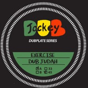
▶ Dub Judah
EXERCISE
streams only · logit +7.2 ± 1.4 · near Twilight Circus Dub Sound System · dub, reggae, roots reggae, ragga
▶ Miel De Montagne
Miel de Montagne
11 tracks, 39 min · €9.99 or more · logit +7.1 ± 1.5 · near Papooz, Oracle Sisters · france, french, dream pop, indie pop
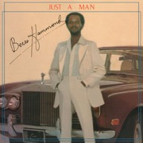
▶ Beres Hammond
Just A Man
8 tracks, 35 min · $12 or more · logit +7.1 ± 1.4 · near Barrington Levy · reggae, roots reggae, beres hammond, lovers rock
▶ Voyou
Les bruits de la ville
12 tracks, 46 min · €10 or more · logit +7.0 ± 1.2 · near Papooz · france, french, pop, techno
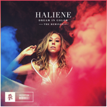
▶ Haliene
Dream In Color (The Remixes)
logit +7.0 ± 1.1 · near Roya · female vocalists, trance, electronic, pop
▶ Feu! Chatterton
Palais d'argile
logit +6.9 ± 1.3 · near Papooz · french, rock, france, pop
▶ Naâman
Temple Road
17 tracks, 58 min · $7 or more · logit +6.9 ± 1.5 · near Biga*Ranx, Matthew McAnuff, Stand High Patrol · reggae, france, poland
▶ Fatbabs
DEEZ
10 tracks, 30 min · name your price · logit +6.8 ± 1.1 · near Biga*Ranx · france, reggae
▶ Céline Dessberg
Hödöö
5 tracks, 19 min · €10 or more · logit +6.8 ± 1.1 · near Oracle Sisters · french, singer-songwriter, france, psychedelic
▶ Cory Hanson
The Unborn Capitalist From Limbo
8 tracks, 31 min · $9 or more · logit +6.8 ± 1.4 · near Woods · usa, psychedelic rock, freak folk, psychedelic
▶ Myd
Born A Loser
14 tracks, 52 min · €10 or more · logit +6.7 ± 1.5 · near Papooz · french, house, electronic, french house
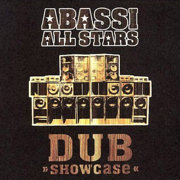
▶ Abassi All Stars
Dub Showcase
logit +6.7 ± 1.4 · near Twilight Circus Dub Sound System · dub, reggae, electronic, trance
▶ Pépite
Les bateaux
4 tracks, 15 min · €4 or more · logit +6.7 ± 1.4 · near Papooz · france, french, pop, electronic
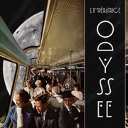
▶ L'Impératrice
Odyssée - EP
6 tracks, 22 min · €6 or more · logit +6.7 ± 1.2 · near Papooz · french, synthpop, electronic, funk
▶ Buju Banton
Too Too Bad
13 tracks, 36 min · $10 or more · logit +6.7 ± 1.0 · near Barrington Levy · reggae, dancehall, ragga, roots reggae
▶ Sanchez
Time to start
12 tracks, 42 min · $7 or more · logit +6.7 ± 1.0 · near Barrington Levy · reggae, dancehall, lovers rock, soul
▶ Flavien Berger
Contre-Temps
13 tracks, 64 min · €9.99 or more · logit +6.7 ± 1.2 · near Papooz, Oracle Sisters · french, synthpop, france, psychedelic
▶ Pi Ja Ma
Magnetofille
12 tracks, 32 min · €9 or more · logit +6.6 ± 1.1 · near Papooz · france, indie pop, french, indie
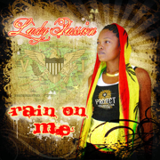
▶ Lady Passion
Rain On Me
logit +6.6 ± 1.7 · near The Co-Operators · reggae, ska, roots reggae, virgin islands
▶ O & the Mo
Make Way For The Sun
9 tracks, 31 min · $12 or more · logit +6.5 ± 1.1 · near Oracle Sisters · dream pop, indie pop, new zealand, psychedelic
Highvisators
High Tone meets Improvisators Dub
logit +6.4 ± 1.4 · near Twilight Circus Dub Sound System · dub, electronic, french, french dub
▶ Ocote Soul Sounds
Taurus
12 tracks, 48 min · $8 or more · logit +6.4 ± 1.6 · near Adrian Quesada · afrobeat, latin, trip hop, funk
▶ Ojard
Euphonie
10 tracks, 27 min · €8 or more · logit +6.4 ± 1.1 · near Salvator Dragatto · france, french
▶ Svaneborg Kardyb
Superkilen
9 tracks, 40 min · £8.99 or more · logit +6.4 ± 1.6 · near Huw Marc Bennett, SHOLTO · jazz, danish, denmark, instrumental
▶ Delvon Lamarr Organ Trio
I Told You So
9 tracks, 41 min · $10 or more · logit +6.4 ± 1.2 · near Adrian Quesada · funk, jazz, instrumental, fusion
▶ Agar Agar
Cardan
5 tracks, 31 min · €10 or more · logit +6.4 ± 1.2 · near Papooz · synthpop, indie pop, french, france
▶ Jah Acid Dub
Delayrium
10 tracks, 61 min · €8 or more · logit +6.4 ± 1.4 · near Twilight Circus Dub Sound System · dub, electronic, reggae, psydub
▶ Khoe Wa
Nadjilo (Khoe Wa Meets Luiza)
5 tracks, 19 min · €5 or more · logit +6.4 ± 1.5 · near The Co-Operators · dub, france, dubstep, sitar
▶ Camp Claude
Moody Moon
10 tracks, 32 min · €8 or more · logit +6.3 ± 1.2 · near Papooz · indie pop, synthpop, female vocalists, france
Vanupié
Janus
logit +6.3 ± 1.0 · near Matthew McAnuff, Biga*Ranx · french, reggae
▶ Emily A. Sprague
Water Memory
5 tracks, 39 min · $7 or more · logit +6.3 ± 1.0 · near Domenique Dumont · ambient, experimental, drone, minimal
▶ The Irresistible Force
Its Tomorrow Already
logit +6.3 ± 1.0 · near The Orb · ambient, downtempo, chillout, electronic
▶ White Fence
For The Recently Found Innocent
14 tracks, 40 min · $9 or more · logit +6.3 ± 1.1 · near Woods · lo-fi, psychedelic rock, psychedelic, garage rock
▶ Jah Melodie
Thanks and Praises
logit +6.3 ± 1.4 · near The Co-Operators · dub, reggae, netherlands, under 2000 listeners
▶ The Kyoto Connection
Postcards
15 tracks, 61 min · $10 or more · logit +6.2 ± 1.0 · near Domenique Dumont · ambient, pop, electronic, electronica
▶ Marcus Gad
Chanting
13 tracks, 63 min · €9.99 or more · logit +6.2 ± 1.5 · near Joe Yorke · roots, reggae, france, new caledonia
▶ Jimmy Whoo
Basic instinct
12 tracks, 33 min · €7 or more · logit +6.2 ± 1.5 · near Papooz · french, hip-hop, france, chillout
▶ Matthew Halsall
Colour Yes (Special Edition)
8 tracks, 67 min · £8.99 or more · logit +6.2 ± 1.7 · near Huw Marc Bennett · jazz, trumpet, nu jazz, nu-jazz
▶ Lewis OfMan
Dancy Party
5 tracks, 17 min · €4 or more · logit +6.2 ± 1.5 · near Papooz · french, electronic, france, indie
▶ Moses Yoofee Trio
MYT
13 tracks, 37 min · €10 or more · logit +6.1 ± 1.4 · near SHOLTO, Rachel Kitchlew · jazz, german, instrumental, jazz fusion
▶ Bleu Toucan
Origami
4 tracks, 15 min · €2.99 or more · logit +6.1 ± 1.5 · near Papooz · french, soul, france, synthpop
▶ Gianni Brezzo
The Awakening
7 tracks, 23 min · €5 or more · logit +6.1 ± 1.1 · near SHOLTO, Huw Marc Bennett, Rachel Kitchlew · jazz, guitar, ambient, instrumental
▶ Yellowbirds
Songs from the Vanished Frontier
9 tracks, 35 min · $9 or more · logit +6.1 ± 1.4 · near Sandy's · psychedelic pop, dream pop, psychedelic, indie pop
▶ Roots Control
Dread Western
logit +6.1 ± 1.6 · near Twilight Circus Dub Sound System · dub, illbient, reggae, downtempo
▶ LA LOM
La Lom
logit +6.1 ± 1.2 · near Adrian Quesada · jazz, psychedelic, latin, usa
Tom Fire
Hôtel Costes 15
logit +6.1 ± 1.1 · near Joe Yorke · reggae, dub, french, singer-songwriter
▶ E. Lundquist
Art Between Minds
10 tracks, 31 min · £8.99 or more · logit +6.1 ± 1.4 · near Salvator Dragatto · united states, usa
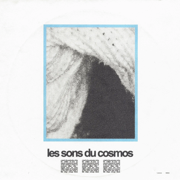
Les Sons Du Cosmos
LAUNDRY
logit +6.1 ± 1.4 · near Salvator Dragatto · united states, usa
▶ Laurent Bardainne
Hymne au soleil
logit +6.1 ± 1.2 · near Papooz · french, jazz, saxophone
▶ Boz Metzdorf
Signs of Seasons
11 tracks, 40 min · $9.99 or more · logit +6.1 ± 1.1 · near Sandy's · 70s, folk, american, usa
▶ Tokyo Tea Room
No Rush
12 tracks, 36 min · €12 · logit +6.1 ± 1.1 · near Oracle Sisters · dream pop, indie pop, bedroom pop, indie
▶ Dubcreator
Roar Riddim
6 tracks, 22 min · €9 or more · logit +6.0 ± 1.0 · near The Co-Operators, Twilight Circus Dub Sound System · dub, reggae, electronic, rap
▶ Alan Munson
One Man's Journey
13 tracks, 48 min · $8 or more · logit +6.0 ± 1.0 · near Sandy's · usa
▶ Roy Montgomery
Temple IV
9 tracks, 73 min · $9 or more · logit +6.0 ± 1.0 · near Woo · post-rock, ambient, space rock, drone
▶ Ziggy Marley
Dragonfly
logit +6.0 ± 1.4 · near Bob Marley & The Wailers · reggae, roots reggae, jamaica, jamaican
▶ R.Hz
Alien Workshop
4 tracks, 26 min · €6 or more · logit +6.0 ± 1.1 · near Subset · dub techno, ambient, deep house
▶ Fikir Amlak
Move Different
10 tracks, 40 min · $9 or more · logit +6.0 ± 1.0 · near The Co-Operators · reggae, roots, dub, jamaica
▶ R-DUG
Elephant Kush
12 tracks, 58 min · €5 or more · logit +6.0 ± 1.4 · near The Co-Operators, Zentone · dub, reggae, electro dub reggae
▶ Radikal Dub Kolektiv
Radikal Dub Kolektiv
12 tracks, 55 min · €8 or more · logit +5.9 ± 2.0 · near Twilight Circus Dub Sound System · dub, reggae, croatian, psycho reggae
▶ haircuts for men
a path
5 tracks, 48 min · £10 · logit +5.9 ± 1.4 · near desert sand feels warm at night · vaporwave, chillwave, electronic, barber beats
▶ Clinton Fearon
Mi Deh Yah
logit +5.9 ± 1.4 · near Matthew McAnuff, Biga*Ranx, Joe Yorke · reggae, roots reggae, roots, jamaica
▶ 2814
Rain Temple
8 tracks, 66 min · £10 · logit +5.9 ± 1.0 · near desert sand feels warm at night · ambient, vaporwave, downtempo, electronic
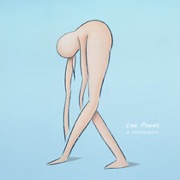
▶ H.Takahashi
Low Power
8 tracks, 36 min · $10 or more · logit +5.9 ± 1.0 · near Domenique Dumont · ambient, experimental, electronic, japan
▶ Paolo Baldini DubFiles
At Song Embassy Papine Kingston 6
15 tracks, 63 min · €8 or more · logit +5.9 ± 1.5 · near The Co-Operators · dub, reggae, italia, italy
▶ Discovery Zone
Remote Control
10 tracks, 34 min · €10 or more · logit +5.9 ± 1.1 · near Domenique Dumont · electronic, indie pop, synthpop, ambient
▶ Jahneration
The Foreword
6 tracks, 25 min · €5 or more · logit +5.9 ± 1.0 · near Matthew McAnuff, Biga*Ranx · reggae
▶ Spacetime Continuum
Sea Biscuit
logit +5.9 ± 1.0 · near The Orb · ambient, idm, electronic, chillout
▶ Léon Phal
Stress Killer
logit +5.9 ± 1.5 · near SHOLTO · jazz, french, composer, instrumental
▶ Dave Guy
Ruby
12 tracks, 30 min · $9.99 or more · logit +5.9 ± 1.7 · near Salvator Dragatto · jazz, trumpet, instrumental, smooth jazz
▶ Freescha
Kids Fill the Floor
13 tracks, 52 min · $10 or more · logit +5.9 ± 1.0 · near Boards of Canada · idm, ambient, electronic, atmospheric
▶ Benny Bock
Vanishing Act
10 tracks, 34 min · $10 or more · logit +5.8 ± 1.1 · near Salvator Dragatto · ambient, guitar, folk, jazz
Noel Ellis
Noel Ellis
logit +5.8 ± 1.0 · near The Co-Operators · reggae, jamaica, male vocalists, roots
▶ bleu soleil
Soleil Bleu
logit +5.8 ± 1.4 · near Biga*Ranx, Zentone · electronic, french, dub, dubstep
▶ Mr. Cloudy
Recluse
9 tracks, 73 min · €9 · logit +5.8 ± 1.0 · near Subset · dub techno, dub, ambient, techno
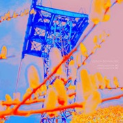
▶ Ulrich Schnauss
Improvisation #5/Improvisation #6
6 tracks, 138 min · name your price · logit +5.8 ± 1.0 · near Boards of Canada · ambient, electronic, chillout, idm
▶ Smith Westerns
Dye It Blonde
10 tracks, 35 min · $9 or more · logit +5.8 ± 1.1 · near Woods · lo-fi, garage rock, noise pop, indie
▶ Emma-Jean Thackray
Yellow
14 tracks, 49 min · £8 or more · logit +5.8 ± 1.0 · near Huw Marc Bennett · jazz, electronic, british, trumpet
▶ Basicnoise
Pattern Explorations
11 tracks, 78 min · €11 or more · logit +5.8 ± 1.0 · near Subset · dub techno, minimal, electronic, ambient
▶ Zzzzra
L'entraide
logit +5.8 ± 1.0 · near Subset · dub techno, minimal, ambient, electronic
▶ The Felice Brothers
Yonder is the Clock
13 tracks, 55 min · $7 or more · logit +5.8 ± 1.1 · near Woods · folk, americana, alt-country, indie folk
▶ The Ruminaters
Welcome To Flight: S.U.N. 91
14 tracks, 39 min · $10 or more · logit +5.8 ± 1.0 · near Sandy's · garage, garage rock, alternative, indie
▶ Ocralab
Nocturnal Transitions
4 tracks, 29 min · €3.50 or more · logit +5.8 ± 1.4 · near Subset · dub techno, ambient, techno, minimal
♪ ▶ The Kimba Unit
Tezeta
logit +5.8 ± 1.4 · near Salvator Dragatto · japan, jazz, contemporary jazz
▶ The Altons
Heartache in Room 14
10 tracks, 36 min · $10 or more · logit +5.8 ± 1.7 · near Adrian Quesada · soul, psychedelic, los angeles, usa
Basque Dub Foundation
Substrain Roots Dub
logit +5.8 ± 1.7 · near Twilight Circus Dub Sound System · dub, reggae, basque, dub reggae
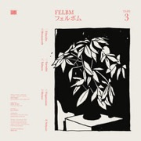
▶ Felbm
Tape 3
14 tracks, 39 min · £5.50 or more · logit +5.8 ± 1.2 · near Domenique Dumont, Woo · ambient, lounge, electronic, instrumental
▶ Blu Mar Ten
The Six Million Names of God
17 tracks, 63 min · £8.99 or more · logit +5.7 ± 1.1 · near Commix · drum and bass, atmospheric drum and bass, ambient, electronic
▶ Nicolas Barnes
Ti Gde
4 tracks, 25 min · €3 or more · logit +5.7 ± 1.4 · near Subset · dub techno, deep house, latvian
▶ Slag Boom Van Loon
So Soon
11 tracks, 64 min · £7.99 or more · logit +5.7 ± 1.0 · near Boards of Canada · idm, ambient, electronic, downtempo
▶ Bill Laurance
Keeping Company
11 tracks, 43 min · €10 or more · logit +5.7 ± 1.1 · near SHOLTO, Rachel Kitchlew · jazz, electronic, piano, instrumental
▶ Christ.
Blue Shift Emissions
11 tracks, 50 min · £5 or more · logit +5.7 ± 1.0 · near Boards of Canada, pilotredsun · idm, ambient, electronic, downtempo
▶ Tosca
Suzuki
12 tracks, 60 min · €11 or more · logit +5.7 ± 1.0 · near The Orb · downtempo, chillout, trip-hop, electronic
▶ Kazy Lambist
33 000 FT.
logit +5.7 ± 1.0 · near Papooz · chillout, french, electronic, indie
▶ Kid Francescoli
Play Me Again
11 tracks, 37 min · €7 or more · logit +5.7 ± 1.0 · near Papooz · french, electronic, indie pop, pop
▶ Instra:mental
Timelines
12 tracks, 67 min · £10 or more · logit +5.7 ± 1.4 · near Commix · drum and bass, dubstep, drumfunk, electronic
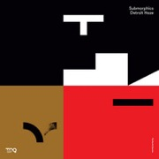
▶ Submorphics
Detroit Haze
10 tracks, 41 min · €7.50 or more · logit +5.7 ± 1.4 · near Commix · drum and bass, liquid funk, soulful drum and bass, dnb
▶ 18 days
日が続く m e l i s s a
7 tracks, 31 min · name your price · logit +5.7 ± 1.0 · near desert sand feels warm at night · slushwave, ambient, dreampunk, vaporwave
▶ The Rootsman
Roots Bloody Rootsman
16 tracks, 74 min · £7 or more · logit +5.7 ± 1.4 · near Twilight Circus Dub Sound System · dub, reggae, electronic, balkan
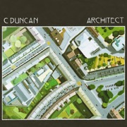
▶ C Duncan
Architect
12 tracks, 48 min · £7 or more · logit +5.7 ± 1.0 · near Oracle Sisters · indie pop, indie, dream pop, electronic
Burial & Four Tet
Wolf Cub & Moth
logit +5.7 ± 1.0 · near Burial · dubstep, electronic, ambient, idm
▶ Dubdadda
Lo-Fi Pon De Hi-Fi
streams only · logit +5.6 ± 1.4 · near Twilight Circus Dub Sound System · dub, reggae, all, electro dub
▶ Paul & The Tall Trees
Our Love In the Light
10 tracks, 27 min · $9.99 or more · logit +5.6 ± 1.7 · near Sandy's · americana, indie, warm, yearning
▶ Ulterior Motive
The Real - EP
4 tracks, 23 min · £5.96 or more · logit +5.6 ± 1.2 · near Commix · drum and bass, neurofunk, techstep, dnb
▶ The New Mastersounds
Breaks from the Border
11 tracks, 48 min · £8 or more · logit +5.6 ± 1.7 · near Adrian Quesada · funk, jazz, jazz funk, deep funk
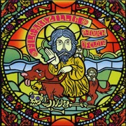
▶ Fila Brazillia
A Touch Of Cloth
12 tracks, 53 min · £7 or more · logit +5.6 ± 1.0 · near The Orb · downtempo, chillout, trip-hop, electronic
▶ Kessoncoda
Outerstate
10 tracks, 35 min · £8.99 or more · logit +5.6 ± 1.0 · near SHOLTO, Huw Marc Bennett · jazz, instrumental, electronic, nu jazz
▶ Durand Jones & The Indications
American Love Call
12 tracks, 43 min · $10 · logit +5.6 ± 1.5 · near Adrian Quesada · soul, neo-soul, rnb, american
▶ Polyrhythmics
Caldera
12 tracks, 60 min · $9.99 or more · logit +5.6 ± 1.2 · near Adrian Quesada · afrobeat, funk, jazz, instrumental
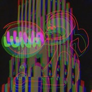
▶ Luna
Penthouse
12 tracks, 57 min · $7 or more · logit +5.6 ± 1.0 · near The Clientele · dream pop, indie pop, indie, indie rock
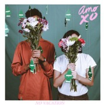
▶ No Vacation
Amo XO
8 tracks, 14 min · $5 or more · logit +5.6 ± 1.0 · near Oracle Sisters · indie pop, dream pop, indie, indie rock
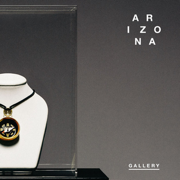
▶ A R I Z O N A
GALLERY
logit +5.6 ± 1.2 · near Roya · pop, electronic, american, synth
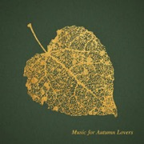
▶ Scrimshire
Music for Autumn Lovers
8 tracks, 39 min · £8 or more · logit +5.5 ± 1.0 · near Huw Marc Bennett, SHOLTO · jazz, soul, nu jazz, funk
▶ Tenderlonious
The Shakedown
9 tracks, 54 min · £7.99 or more · logit +5.5 ± 1.4 · near Huw Marc Bennett · electronic, jazz, flute, funk
▶ Utah Jazz
The Music Factory
15 tracks, 69 min · £7 or more · logit +5.5 ± 1.0 · near Commix · drum and bass, liquid funk, jungle, drum n bass
▶ Marcus Intalex
Fourfit EP 08
logit +5.5 ± 1.0 · near Commix · drum and bass, liquid funk, dnb, drum n bass
▶ Christophe Héral
Rayman Legends (Original Game Soundtrack)
logit +5.5 ± 1.6 · near Will Wiesenfeld · soundtrack, composer, video game music, french
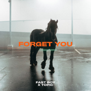
▶ Fast Boy
Forget You
logit +5.5 ± 1.4 · near Roya · electronic, pop, dance, german
▶ Deux Filles
Shadow Farming
18 tracks, 39 min · £7 or more · logit +5.5 ± 1.4 · near Woo · ambient, dream pop, experimental, art pop
▶ Katerine
Robots Après Tout
logit +5.5 ± 1.6 · near Papooz · french, pop, electronic, chanson francaise
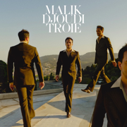
▶ malik djoudi
Troie
logit +5.5 ± 1.7 · near Papooz · french, indie, francophone, pop
▶ Salamanda
Sphere
8 tracks, 35 min · £8 or more · logit +5.5 ± 1.2 · near Domenique Dumont · ambient, electronic, experimental, idm
▶ Qwalia
Sound & Reason
7 tracks, 41 min · £10 or more · logit +5.5 ± 1.7 · near Salvator Dragatto · jazz, psychedelic, funky, guitar
▶ The Vernon Spring
A Plane Over Woods
14 tracks, 33 min · £7 or more · logit +5.5 ± 1.1 · near Domenique Dumont, Woo · ambient, jazz, electronic, piano
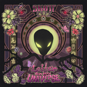
▶ Skott
A Letter from the Universe
logit +5.5 ± 1.0 · near Roya · pop, electronic, folk, swedish
▶ Infinity Frequencies
Between Two Worlds
24 tracks, 34 min · $1 or more · logit +5.5 ± 1.7 · near desert sand feels warm at night · vaporwave, ambient, broken transmission, electronic
▶ BT Gate X-138
Slow Frequency Emitter
8 tracks, 57 min · €8 or more · logit +5.4 ± 1.2 · near Subset · dub techno, norway, ambient, dub
▶ Random Movement
Life is Permanent EP
4 tracks, 22 min · $3.99 or more · logit +5.4 ± 1.4 · near Commix · drum and bass, liquid funk, dnb, soulful drum and bass
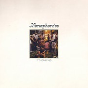
▶ Monophonics
It's Only Us
8 tracks, 39 min · $8 or more · logit +5.4 ± 1.5 · near Adrian Quesada · funk, soul, afrobeat, psychedelic
▶ Lewis Bennett
Trade Winds
12 tracks, 42 min · £10 or more · logit +5.4 ± 1.4 · near The Co-Operators · dub, reggae, british, uk
▶ Move 78
The Algorithm Smiles Upon You
8 tracks, 33 min · £7 or more · logit +5.4 ± 1.3 · near Huw Marc Bennett, SHOLTO, Rachel Kitchlew · jazz, instrumental, berlin, hip hop
▶ The Polyphonic Spree
Together We're Heavy
10 tracks, 58 min · $7 or more · logit +5.4 ± 1.4 · near The High Llamas · indie, indie pop, alternative, pop
▶ Ancient Infinity Orchestra
It's always about love
8 tracks, 40 min · £8.99 or more · logit +5.4 ± 1.5 · near Huw Marc Bennett, SHOLTO · jazz, instrumental, leeds, united kingdom
Alpha & Omega meets The Disciples
The Sacred Art Of Dub
logit +5.4 ± 1.7 · near Twilight Circus Dub Sound System · dub, reggae, focus on, sweet ridim
▶ Deemkeyne
Ratio
7 tracks, 43 min · €5 or more · logit +5.4 ± 1.2 · near Subset · dub techno, techno, composer, germany
▶ Seba
Identity
10 tracks, 61 min · €9.99 or more · logit +5.4 ± 1.5 · near Commix · drum and bass, atmospheric drum and bass, drumfunk, dnb
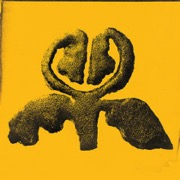
▶ Flaer
Preludes
9 tracks, 26 min · £7 or more · logit +5.4 ± 1.2 · near Woo, Domenique Dumont · ambient, instrumental, contemporary classical, electronic
▶ Cyantific
Ghetto Blaster
13 tracks, 76 min · £9.25 or more · logit +5.4 ± 1.3 · near Commix · drum and bass, liquid funk, dnb, hospital records
▶ Toroki
African Step
15 tracks, 64 min · €11 or more · logit +5.3 ± 1.7 · near The Co-Operators · digital, dub, reggae, roots
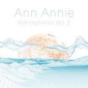
▶ Ann Annie
Atmospheres, Vol. 2
7 tracks, 30 min · $7 or more · logit +5.3 ± 1.2 · near Domenique Dumont, Woo · ambient, folk, contemporary classical, instrumental
▶ Bop
Remix Your Mind
5 tracks, 31 min · £5.25 or more · logit +5.3 ± 1.4 · near Clubroot · microfunk, drum and bass, idm, electronic
▶ King Tuff
King Tuff
12 tracks, 40 min · $10 · logit +5.3 ± 1.4 · near Woods · garage rock, lo-fi, psychedelic, garage pysch
▶ Sulah Jordan
Lady Bug
4 tracks, 25 min · $4 or more · logit +5.3 ± 1.6 · near Salvator Dragatto · ambient, jazz, groove, san francisco
Ruts DC vs. Zion Train
Rhythm Collision Remix
logit +5.3 ± 1.4 · near Twilight Circus Dub Sound System · dub, reggae, electronic, positive
▶ Feed LA
Feed LA
10 tracks, 31 min · $7 or more · logit +5.3 ± 1.4 · near Salvator Dragatto · jazz, jazz-rock
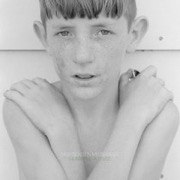
▶ Hiss Golden Messenger
Heart Like a Levee
11 tracks, 43 min · $9 or more · logit +5.3 ± 1.0 · near Woods · folk, alt-country, americana, folk rock
▶ Jack Wall
Call of Duty Black Ops II (Original Game Soundtrack)
logit +5.3 ± 1.4 · near Will Wiesenfeld · soundtrack, video game music, ambient, instrumental
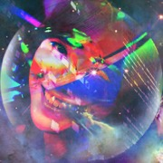
▶ death's dynamic shroud
I'll Try Living Like This
12 tracks, 60 min · name your price · logit +5.2 ± 1.6 · near desert sand feels warm at night · vaporwave, electronic, glitch pop, glitch
▶ FM Skyline
Illuminations
13 tracks, 44 min · $7 or more · logit +5.2 ± 2.0 · near desert sand feels warm at night · vaporwave, electronic, synthwave, chillsynth
▶ Overcast Sound
Water Lines
5 tracks, 49 min · €7 or more · logit +5.2 ± 1.7 · near Subset · dub techno, dub, ambient, deep techno
▶ Van Bonn
Cloudwalker
5 tracks, 30 min · €4 or more · logit +5.2 ± 1.4 · near Subset · ambient, dub, downbeat, techno
Vibronics and Jah Free
Sound System At Batofar Live
logit +5.2 ± 1.4 · near Twilight Circus Dub Sound System · dub, reggae-dub, reggae, uk
▶ Pilotredsky
Doggone Systems EP
5 tracks, 21 min · $3 or more · logit +5.2 ± 1.7 · near pilotredsun · idm, downtempo, drill and bass, drum and bass
▶ The Circling Sun
Spirits
8 tracks, 48 min · £6.99 or more · logit +5.2 ± 1.8 · near Huw Marc Bennett · jazz, new zealand, cosmic, jazz fusion
▶ 4am Kru
High Time
4 tracks, 18 min · £4.50 or more · logit +5.2 ± 1.5 · near Nia Archives · jungle, rave, breakbeat, old school hardcore
▶ Sraunus
atmospheric insomnia
8 tracks, 68 min · €10 or more · logit +5.2 ± 1.1 · near Subset · dub techno, ambient, ambient techno, minimal
▶ Abram Shook
Love at Low Speed
10 tracks, 41 min · $10 · logit +5.2 ± 1.4 · near Sandy's · american, austin tx, ambient, indie
▶ Vytis
Deepchord Avenue
10 tracks, 75 min · €6 or more · logit +5.2 ± 1.4 · near Subset · dub techno, techno, ambient, electronic
▶ Louis Philippe
Delta Kiss/Sunshine
17 tracks, 53 min · £7.99 or more · logit +5.2 ± 1.5 · near The High Llamas · chamber pop, french, indie pop, pop
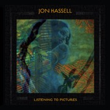
▶ Jon Hassell
Listening To Pictures (Pentimento Volume One)
8 tracks, 39 min · £10 · logit +5.2 ± 1.4 · near Woo · ambient, jazz, experimental, electronic
▶ Dave Marian
Pleiades
5 tracks, 42 min · €1.80 or more · logit +5.1 ± 1.1 · near Subset · dub techno, ambient, acoustic, electronica
▶ Papa Romeo
Late Night Load Out
8 tracks, 28 min · €10 or more · logit +5.1 ± 1.4 · near Salvator Dragatto · jazz, soul, electronic, funk
▶ Nora Stanley
Glass
9 tracks, 37 min · $10 or more · logit +5.1 ± 1.4 · near Salvator Dragatto · ambient, jazz, experimental, flute
▶ John Paesano
Marvel’s Spider-Man: Miles Morales (Original Video Game Soundtrack)
logit +5.1 ± 1.7 · near Will Wiesenfeld · soundtrack, composer, instrumental, video game music
▶ Tender H
Episodes 06-15
10 tracks, 42 min · €11 or more · logit +5.1 ± 1.4 · near Subset · dub techno, dub, ambient, belarusian
▶ Rod Anton
Ubatuba
11 tracks, 48 min · €10 or more · logit +5.1 ± 1.4 · near The Co-Operators · dub, reggae, dancehall, roots
▶ The Sure Fire Soul Ensemble
Step Down
10 tracks, 35 min · $10 or more · logit +5.1 ± 1.6 · near Adrian Quesada · funk, jazz, jazz fusion, soul
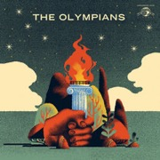
▶ The Olympians
The Olympians
11 tracks, 40 min · $7.99 or more · logit +5.1 ± 1.7 · near Adrian Quesada · jazz, soul, funk, afro soul
▶ Ohrwert
Fidelis / Blavus
logit +5.1 ± 1.6 · near Subset · dub techno, ambient, dutch, techno
KaloZoic
不平和モダニズム
logit +5.1 ± 2.4 · near BLACK SHIP · visual kei, j-rock, disbanded, my favorite
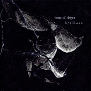
brodiaea
trace of abyss
logit +5.1 ± 2.4 · near BLACK SHIP · visual kei, j-rock, under code production, kotekote kei
Alex Humann
Dawn
logit +5.1 ± 1.4 · near Subset · dub techno, dub, techno, electronic
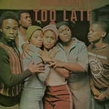
Gibson Kente
Too Late
logit +5.1 ± 1.6 · near Sandy's · funk, psychedelic, all, south african
▶ Husbands
After the Gold Rush Party
13 tracks, 36 min · name your price · logit +5.0 ± 1.1 · near Oracle Sisters · indie pop, synthpop, electronic, indie
▶ Rebecca Sugar
spiral bound
6 tracks, 13 min · $4 or more · logit +5.0 ± 2.0 · near Will Wiesenfeld · rhombus, soundtrack, freterator, pop
▶ Hallmark '87
A T R I U M
15 tracks, 54 min · name your price · logit +5.0 ± 1.7 · near desert sand feels warm at night · mallsoft, vaporwave, ambient, experimental
▶ Indica Dubs
Faith From Above
4 tracks, 14 min · £5 or more · logit +5.0 ± 1.6 · near The Co-Operators · dub, reggae, sound system, steppas
▶ Lilly Wood & The Prick
Prayer In C
logit +5.0 ± 1.0 · near Papooz · french, indie, indie pop, folk
▶ strongboi
strongboi
7 tracks, 33 min · €8 or more · logit +5.0 ± 1.2 · near Oracle Sisters · funk, indie pop, chamber pop, electronic
▶ Alec Holowka
Night in the Woods (Original Soundtrack, Vol. 1) [At the End of Everything]
62 tracks, 192 min · $7 or more · logit +5.0 ± 1.7 · near Will Wiesenfeld · ambient, soundtrack, indie, video game music
▶ Kate Bollinger
Look at it in the Light
6 tracks, 20 min · $5 or more · logit +5.0 ± 1.4 · near Oracle Sisters · indie, indie pop, pop, female vocalists
▶ Tom Salta
Halo: Spartan Assault
27 tracks, 50 min · $9.99 or more · logit +4.9 ± 2.0 · near Will Wiesenfeld · soundtrack, instrumental, video game music, trailer music
▶ Lee Fields
Sentimental Fool
12 tracks, 38 min · $10 or more · logit +4.9 ± 2.0 · near Adrian Quesada · soul, funk, deep funk, daptone
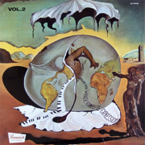
▶ Hysear Don Walker
Complete Expressions, Vol. 2
logit +4.9 ± 1.8 · near Salvator Dragatto · jazz, instrumental, solo, united states
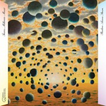
▶ Pauline Anna Strom
Trans-Millenia Music
15 tracks, 93 min · $12 or more · logit +4.9 ± 1.4 · near Woo · ambient, new age, electronic, experimental
▶ Generationals
Heza
10 tracks, 34 min · $10 or more · logit +4.9 ± 1.6 · near Oracle Sisters · indie, indie pop, indie rock, jangle pop
▶ Azamiah
In Phases
12 tracks, 37 min · €11 or more · logit +4.9 ± 1.7 · near Huw Marc Bennett · jazz, vocal, trombone, uk
▶ Stephen Malkmus and the Jicks
Pig Lib
logit +4.8 ± 1.0 · near Woods, The Walkmen · indie rock, indie, alternative, lo-fi
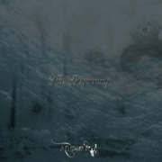
▶ Ａｎｃｅｓｔｒａｌ
The Beginning
logit +4.8 ± 2.0 · near BLACK SHIP · visual kei, j-rock, japanese, power metal
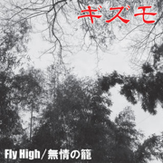
ギズモ
Fly High/無情の籠
logit +4.8 ± 2.2 · near BLACK SHIP · j-rock, visual kei, rock, petapeta
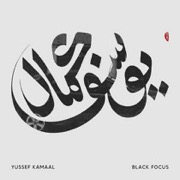
▶ Yussef Kamaal
Black Focus
10 tracks, 44 min · £9 or more · logit +4.7 ± 1.9 · near Huw Marc Bennett · jazz, jazz fusion, jazz-funk, london
▶ Skjold
Thirteen Years Hell
13 tracks, 66 min · €3.33 or more · logit +4.6 ± 2.1 · near Salvator Dragatto · raw black metal, black metal, danish, danish black metal
♪ ▶ Art of Noise
Daft
logit +4.6 ± 1.0 · near The Orb · electronic, ambient, experimental, 80s
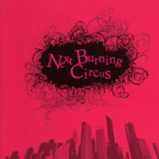
Ｊｅｗｅｌ
Next Burning Circus
logit +4.4 ± 2.2 · near BLACK SHIP · visual kei, japanese, j-rock, j-indie
独立国歌-Ashe'-
夢追ヰPARADOX
logit +4.4 ± 2.2 · near BLACK SHIP · visual kei, j-rock, indies, japanese
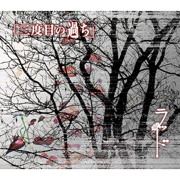
ラッド
三度目の過ち
logit +4.4 ± 2.2 · near BLACK SHIP · visual kei, j-rock, japanese, oshare kei
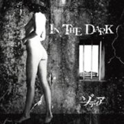
ゾディア
IN THE DARK
logit +4.4 ± 2.2 · near BLACK SHIP · visual kei, j-rock, under code production, disbanded
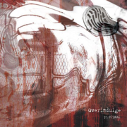
DI3SIRAE
Overindulge
logit +4.4 ± 2.2 · near BLACK SHIP · visual kei, nagoya kei, j-rock, japanese
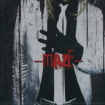
Ｖｉｌｌａｉｎ
-MAZE-
logit +4.3 ± 1.7 · near BLACK SHIP · visual kei, j-rock, metal, rock
Played, not owned Unowned albums you have played in the last year, in a fresh order each load; buy? marks one past 8 plays on 3 days.
▶ Naran Ratan
trees etc.
9 tracks, 22 min · £9 or more · 9 plays on 1 day, 5 Nov
▶ Beverly Glenn-Copeland
Keyboard Fantasies
6 tracks, 40 min · £7 or more · 6 plays on 1 day, 5 Nov
▶ Charlie Pbuy?, saved on Spotify
Roots
11 tracks, 45 min · €11 or more · 86 plays on 14 days, Dec 2024 to 5 Nov
▶ Town Radiobuy?, saved on Spotify
Vol 1 & 2
13 tracks, 39 min · $7 or more · 160 plays on 17 days, Jan 2025 to 5 Nov
▶ Lewis Bennett
Trade Winds
12 tracks, 42 min · £10 or more · 3 plays on 1 day, 5 Nov
▶ Greg Foat
everyone
8 tracks, 39 min · £9 or more · 4 plays on 1 day, 4 Nov
▶ Daniel Rossen
You Belong There
10 tracks, 44 min · £9 or more · 20 plays on 2 days, 1 Nov to 4 Nov
▶ Luxury Elite
world class
20 tracks, 49 min · name your price · 5 plays on 1 day, 4 Nov
▶ Tassilli Players
The Wonderful World of Weed In Dub
12 plays on 1 day, 4 Nov
▶ SHOLTO
Letting Go of Forever
26 tracks, 74 min · £14 or more · 41 plays on 2 days, 2 Nov to 3 Nov
▶ Kid Francescoli
Play Me Again
11 tracks, 37 min · €7 or more · 3 plays on 1 day, 3 Nov
▶ No Vacation
Intermission
5 tracks, 16 min · $5 or more · 5 plays on 1 day, 3 Nov
▶ Vels Trio
Celestial Greens
11 tracks, 42 min · £8 or more · 7 plays on 1 day, 3 Nov
▶ Greg Foat
Symphonie Pacifique
16 tracks, 63 min · £13 or more · 5 plays on 1 day, 2 Nov
▶ Alice Phoebe Lou
Shelter
9 tracks, 31 min · €8 or more · 9 plays on 1 day, 2 Nov
▶ Generationals
Heza
10 tracks, 34 min · $10 or more · 7 plays on 1 day, 1 Nov
▶ Paolo Baldini DubFiles
Dubfiles at Song Embassy, Papine, Kingston 6
15 tracks, 63 min · €8 or more · 3 plays on 1 day, 31 Oct
▶ Chinese American Bear
Wah!!!
11 tracks, 39 min · £8 or more · 16 plays on 1 day, 31 Oct
▶ Agar Agar
Cardan
5 tracks, 31 min · €10 or more · 5 plays on 1 day, 31 Oct
▶ Chip Wickham
Cloud 10
8 tracks, 39 min · £8.99 or more · 11 plays on 1 day, 30 Oct
▶ Alien Trackersbuy?, saved on Spotify
Dubs from Vortex Beach
12 tracks, 38 min · €9 or more · 237 plays on 20 days, 14 Jan to 30 Oct
▶ MARCUS GAD & TRIBE
CHANTING
13 tracks, 63 min · €9.99 or more · 20 plays on 2 days, 29 Oct to 30 Oct
▶ Domenique Dumontbuy?, saved on Spotify
MINIATURES DE AUTO RHYTHM
8 tracks, 30 min · €8 or more · 139 plays on 21 days, Sep 2025 to 29 Oct
▶ Altone
Invincible Nature EP
4 tracks, 25 min · €6.50 or more · 7 plays on 4 days, Dec 2025 to 29 Oct
▶ Lewis OfMan
Dancy Party
5 tracks, 17 min · €4 or more · 5 plays on 1 day, 28 Oct
▶ Slow Attack Ensemble
Music for Turntable, Guitars and Sampled Instruments
9 tracks, 36 min · $10 or more · 9 plays on 1 day, 28 Oct
▶ Scrimshire
Music for Autumn Lovers (EP)
8 tracks, 23 min · £5 or more · 7 plays on 1 day, 28 Oct
▶ Voyou
Les bruits de la ville
12 tracks, 46 min · €10 or more · 7 plays on 1 day, 28 Oct
▶ Isaac Delusion
Rust & Gold
12 tracks, 46 min · €10 or more · 12 plays on 1 day, 28 Oct
▶ The Kyoto Connection
Postcards (2023 Edition)
15 tracks, 61 min · $10 or more · 7 plays on 1 day, 28 Oct
▶ Abassi All Stars
Dub Showcase
3 plays on 1 day, 28 Oct
♪ Abassi All Stars
Showcase DUB
4 plays on 1 day, 28 Oct
▶ Lady Passion
Rain On Me
6 plays on 1 day, 27 Oct
▶ Matthew McAnuff
Be Careful
43 plays on 2 days, 25 Oct to 26 Oct
♪ ▶ Dumis9ne I
TIMELESS
22 plays on 2 days, 27 Jan to 25 Oct
▶ Papoozbuy?
RESONATE
33 plays on 4 days, 2 Apr to 25 Oct
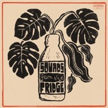
The Co-Operatorsbuy?, saved on Spotify
Sounds from the Fridge
104 plays on 14 days, Oct 2025 to 23 Oct
▶ Fantan Mojah
Rebel I Am
7 plays on 2 days, 18 Oct to 21 Oct
▶ Ultimate Paintingbuy?, saved on Spotify
Ultimate Painting
10 tracks, 35 min · $7 or more · 40 plays on 5 days, Dec 2024 to 21 Oct
▶ Hirth Martinez
Hirth From Earth
19 plays on 2 days, 26 Aug to 21 Oct
▶ Drugdealer
Raw Honey
9 tracks, 36 min · $9.99 or more · 7 plays on 1 day, 21 Oct
▶ Oracle Sistersbuy?
Paris II
5 tracks, 19 min · $7 or more · 32 plays on 6 days, 19 Aug to 20 Oct
▶ Ultimate Paintingbuy?
Green Lanes
12 tracks, 31 min · $7 · 28 plays on 6 days, Jan 2024 to 19 Oct
♪ Dub Taylor
24 to the Floor
5 plays on 1 day, 18 Oct
▶ Michael Rosebuy?
African Roots
40 plays on 3 days, Jun 2024 to 10 Oct
▶ Mykal Rosebuy?, saved on Spotify
African Roots
52 plays on 7 days, Jun 2024 to 10 Oct
▶ Mykal Rosebuy?
African Dub
21 plays on 3 days, Jul 2024 to 10 Oct
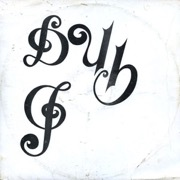
Jimmy Radway & The Fe Me Time All Starsbuy?
Dub I
39 plays on 3 days, Dec 2025 to 5 Oct
▶ Oracle Sistersbuy?
Divinations
11 tracks, 43 min · €11 or more · 22 plays on 3 days, 16 Aug to 2 Oct
▶ Brian Wilsonbuy?, saved on Spotify
Orange Crate Art
327 plays on 29 days, 22 Mar to 30 Sep
Yabby You & Mad Professor
Yabby You Meets Mad Professor & Black Steel In Ariwa Studio
11 plays on 1 day, 29 Sep
▶ Foxwarrenbuy?, saved on Spotify
2
15 tracks, 37 min · $8 or more · 279 plays on 20 days, Jun 2025 to 29 Sep
♪ ▶ Zilla Danbuy?, saved on Spotify
Twin Souls Dub
26 plays on 5 days, 5 Sep to 28 Sep
♪ GachaMedzbuy?, saved on Spotify
GACHA MEDZ DUB
79 plays on 8 days, 27 Aug to 28 Sep
▶ Oracle Sistersbuy?
Hydranism
11 tracks, 38 min · $11.99 or more · 36 plays on 3 days, 17 Aug to 28 Sep
▶ Akasha
Cinematique
3 plays on 1 day, 27 Sep
▶ Wackiesbuy?, saved on Spotify
Jamaica Super Dub Session
120 plays on 16 days, Jun 2025 to 26 Sep
▶ Okonski
Additions
6 tracks, 20 min · $5 or more · 14 plays on 2 days, 23 Sep to 24 Sep
The High Llamasbuy?, saved on Spotify
Hawaii
265 plays on 11 days, 11 Apr to 22 Sep
▶ Sandy'sbuy?, saved on Spotify
Fourth Dementia
10 tracks, 36 min · $8 or more · 14 plays on 4 days, Mar 2025 to 20 Sep
▶ Kaya Fyahbuy?, saved on Spotify
1994 (Born In The Jungle)
104 plays on 12 days, Nov 2025 to 19 Sep
▶ Woobuy?, saved on Spotify
Into the Heart Of Love
23 tracks, 69 min · £7 or more · 371 plays on 28 days, Jun 2025 to 19 Sep
▶ Adrian Quesadabuy?
Jaguar Sound
12 tracks, 35 min · $10 or more · 62 plays on 3 days, 13 Sep to 18 Sep
▶ Salvator Dragattobuy?, saved on Spotify
Thoughts Of You
11 tracks, 26 min · $10 or more · 80 plays on 5 days, 14 Apr to 15 Sep
▶ Misha Panfilov
Where the Birds Fly
6 tracks, 33 min · €8 or more · 14 plays on 2 days, 14 Sep to 15 Sep
▶ 40 Winks
Field Recordings
17 tracks, 61 min · €12 or more · 23 plays on 2 days, 13 Sep to 14 Sep
▶ Eddie Suzuki
High Tide
12 tracks, 38 min · $9 or more · 14 plays on 1 day, 13 Sep
The Velvet Underground
Loaded (2015 Remaster)
20 plays on 2 days, 18 Aug to 13 Sep
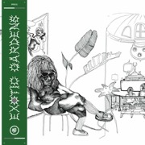
▶ Exotic Gardens
Morning Dubs
17 plays on 2 days, Dec 2025 to 12 Sep
▶ Zilla Danbuy?, saved on Spotify
Starlight Dub
65 plays on 3 days, 5 Sep to 8 Sep
▶ Papoozbuy?, saved on Spotify
RESONATE AUGMENTED
368 plays on 23 days, 31 Jan to 7 Sep
▶ Komet City
Digital Reggae Party
14 tracks, 44 min · 7 or more · 6 plays on 2 days, 13 Mar to 5 Sep
♪ ▶ Hans Majestät
Frukt Vol. 2
30 plays on 1 day, 5 Sep
▶ Radikal Gurusaved on Spotify
The Rootstepa
11 tracks, 56 min · €10.50 or more · 14 plays on 2 days, 9 Jun to 2 Sep
▶ KanDee
Maelstrom
11 tracks, 46 min · €8 or more · 7 plays on 2 days, Sep 2025 to 1 Sep
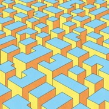
▶ Rickard Jäverlingbuy?, saved on Spotify
Album 4
117 plays on 13 days, 12 Apr to 1 Sep
▶ Sven Wunder
Wabi Sabi
11 tracks, 36 min · €9.99 or more · 6 plays on 2 days, 1 Mar to 1 Sep
▶ KanDeesaved on Spotify
The Mechanical Orchestra
8 tracks, 26 min · €6 or more · 20 plays on 2 days, Sep 2025 to 1 Sep
♪ ▶ Minimansaved on Spotify
Thrulight
6 plays on 3 days, Sep 2024 to 1 Sep
▶ Fragile Statebuy?, saved on Spotify
The Facts and the Dreams
10 tracks, 44 min · £7 or more · 25 plays on 7 days, Aug 2024 to 1 Sep
▶ Roots Architectsbuy?, saved on Spotify
From Dub 'Til Now
9 tracks, 40 min · 10 or more · 35 plays on 11 days, Aug 2025 to 1 Sep
▶ Target Demographicbuy?, saved on Spotify
Moments With You
8 tracks, 41 min · €10 or more · 57 plays on 8 days, 10 Aug to 1 Sep
▶ Misha Panfilovbuy?, saved on Spotify
Eternal Almost
10 tracks, 39 min · €10 or more · 14 plays on 3 days, 11 Jul to 1 Sep
▶ Misha Panfilovbuy?, saved on Spotify
Frutaria Electrónica
10 tracks, 38 min · €10 or more · 35 plays on 3 days, 19 Jul to 31 Aug
▶ The Revolutionariesbuy?
Earthquake Dub
10 tracks, 31 min · $10 or more · 72 plays on 14 days, Jun 2025 to 31 Aug
▶ Noda & Wolfersbuy?, saved on Spotify
Tascam Space Season
7 tracks, 35 min · name your price · 36 plays on 5 days, Jan 2026 to 31 Aug
♪ ▶ Dubblestandartbuy?, saved on Spotify
Reggae Classics (Dubvisionist Dub)
19 plays on 4 days, Jan 2026 to 30 Aug
▶ Dub Syndicatebuy?, saved on Spotify
Classic Selection Volume 1
17 tracks, 73 min · £5 or more · 34 plays on 5 days, Jul 2025 to 30 Aug
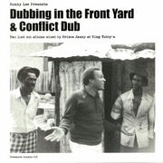
▶ Bunny Leebuy?
Dubbing in the Front Yard & Conflict Dub
78 plays on 6 days, Jul 2024 to 30 Aug
▶ The Durutti Column
The Return of The Durutti Column
15 tracks, 48 min · €6 or more · 14 plays on 2 days, 28 Aug to 30 Aug
▶ Wackiesbuy?
African Roots Act 2
42 plays on 4 days, 30 Jul to 29 Aug
♪ ▶ Israel Vibrationbuy?
Baco Sessions
8 plays on 3 days, Aug 2025 to 28 Aug
▶ Roots Radics
SUMMER OF DUB
4 plays on 1 day, 27 Aug
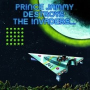
▶ Prince Jammybuy?
Destroys The Invaders
34 plays on 17 days, Dec 2024 to 27 Aug
Sly & Robbiesaved on Spotify
SLY FOREVER DUB
8 plays on 1 day, 27 Aug
▶ Another Channelbuy?, saved on Spotify
(dub) excursion (s)
8 tracks, 43 min · €12 or more · 88 plays on 15 days, Nov 2024 to 27 Aug
▶ Babe Rootsbuy?, saved on Spotify
Babe Roots
6 tracks, 21 min · €8 or more · 68 plays on 11 days, Nov 2024 to 27 Aug
▶ Another Channelbuy?, saved on Spotify
Aphelion
8 tracks, 35 min · €12 or more · 41 plays on 11 days, Dec 2025 to 27 Aug
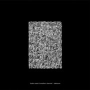
▶ Babe Rootsbuy?, saved on Spotify
Takeover EP
6 tracks, 26 min · €5 or more · 47 plays on 16 days, Nov 2024 to 27 Aug
▶ Docetismbuy?, saved on Spotify
Breast And Vulture
10 tracks, 47 min · €1 or more · 93 plays on 13 days, Nov 2025 to 27 Aug
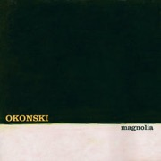
▶ Okonskibuy?, saved on Spotify
Magnolia
7 tracks, 29 min · $10 or more · 78 plays on 12 days, 13 May to 27 Aug
▶ The Upsetterssaved on Spotify
Blackboard Jungle Dub
streams only · 15 plays on 2 days, 13 Aug to 26 Aug
▶ Roots Architects
From Then 'Til Now
9 tracks, 41 min · 10 or more · 10 plays on 2 days, Aug 2025 to 26 Aug
The High Llamas
Talahomi Way
12 plays on 1 day, 26 Aug
Harry Mudiebuy?
Harry Mudie Meet King Tubby In Dub Conference Volume Three (Remastered)
27 plays on 12 days, Jun 2025 to 25 Aug
▶ The Aggrovatorsbuy?
Dubbing At King Tubby's
44 tracks, 150 min · $24 or more · 61 plays on 19 days, Aug 2024 to 25 Aug
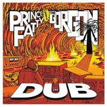
The Aggrovatorsbuy?
Prince Fatty Meets The Gorgon In Dub
62 plays on 14 days, Jul 2025 to 25 Aug
▶ Joe Gibbs & The Professionalsbuy?
Majestic Dub
9 tracks, 29 min · $10 or more · 10 plays on 4 days, Jun 2025 to 25 Aug
▶ Tapper Zukiebuy?
In Dub
29 plays on 11 days, Apr 2024 to 25 Aug
The Aggrovatorsbuy?
Kaya Dub
18 plays on 3 days, Aug 2025 to 24 Aug
Joe Gibbs & The Professionalsbuy?, saved on Spotify
African Dub Chapter 5
38 plays on 8 days, Jul 2025 to 24 Aug
▶ Clea Vincentbuy?
Ad vitam æternamour
11 tracks, 35 min · €9.99 or more · 20 plays on 3 days, 10 Feb to 24 Aug
▶ Count Dubulabuy?, saved on Spotify
The Rise Of Count Dubula
6 tracks, 22 min · $5 or more · 159 plays on 26 days, 17 Apr to 21 Aug
▶ La Femme
Mystère
16 tracks, 72 min · €6.99 or more · 9 plays on 1 day, 21 Aug
♪ ▶ Juniorebuy?, saved on Spotify
Dub Remixes & Instrumentals
40 plays on 5 days, 11 Feb to 21 Aug
▶ Hamatsukibuy?, saved on Spotify
Oldies Vol 2
43 plays on 4 days, 8 Aug to 21 Aug
▶ Manudigitalbuy?, saved on Spotify
Mexico Sessions
137 plays on 25 days, Nov 2024 to 20 Aug
▶ Manudigitalbuy?, saved on Spotify
Digital Lab, Vol.2
6 tracks, 22 min · €4 or more · 12 plays on 5 days, Jan 2025 to 20 Aug
▶ Another Channelbuy?, saved on Spotify
Behind The Glow
10 tracks, 45 min · €12 or more · 61 plays on 16 days, Nov 2024 to 20 Aug
▶ Momoko Gill
Momoko
11 tracks, 40 min · £9 or more · 8 plays on 1 day, 20 Aug
▶ ZENAsaved on Spotify
TEMESGEN
6 tracks, 25 min · £5 or more · 6 plays on 1 day, 20 Aug
▶ Tuff Scout All Starsbuy?, saved on Spotify
Inna London Dub
109 plays on 14 days, Jan 2025 to 20 Aug
▶ Jeffrey Silversteinbuy?
You Become the Mountain
9 tracks, 38 min · $9 or more · 11 plays on 6 days, Jun 2025 to 20 Aug
▶ Ambient Warriorbuy?, saved on Spotify
Dub Journey's
10 tracks, 43 min · $10 or more · 110 plays on 13 days, Jul 2025 to 19 Aug
♪ Sly & Robbiesaved on Spotify
At Dub Station
25 plays on 2 days, 18 Aug to 19 Aug
▶ William Tylerbuy?, saved on Spotify
Modern Country
7 tracks, 40 min · $9 or more · 80 plays on 16 days, 18 May to 19 Aug
▶ Jeffrey Silversteinbuy?, saved on Spotify
Western Sky Music
9 tracks, 31 min · $10 or more · 22 plays on 5 days, Jun 2025 to 19 Aug
▶ Babe Rootsbuy?
Remixes EP
5 tracks, 31 min · €5 · 13 plays on 10 days, Dec 2024 to 18 Aug
▶ Babe Rootsbuy?, saved on Spotify
Through We EP
4 tracks, 18 min · £4 or more · 22 plays on 5 days, Dec 2024 to 18 Aug
▶ Tone Temple
Shake the walls
5 tracks, 31 min · €5 or more · 5 plays on 1 day, 18 Aug
▶ Misha Panfilovbuy?, saved on Spotify
Days As Echoes
6 tracks, 35 min · €10 or more · 73 plays on 16 days, 13 Feb to 18 Aug
▶ Misha Panfilovbuy?, saved on Spotify
In Focus
14 tracks, 35 min · €10 or more · 40 plays on 4 days, 7 Aug to 17 Aug
▶ SUBSET
Oscillations
5 tracks, 37 min · name your price · 7 plays on 2 days, 3 Aug to 16 Aug
▶ Mathimidoribuy?, saved on Spotify
Akebono
10 tracks, 63 min · €8 or more · 31 plays on 12 days, 28 May to 16 Aug
Rhythm & Soundsaved on Spotify
Showcase
21 plays on 2 days, 29 Jul to 16 Aug
♪ Junior Bylesbuy?
Lee ''Scratch'' Perry & Friends - The Black Ark Years (The Jamaican 7"s)
17 plays on 7 days, Aug 2025 to 16 Aug
▶ Summer 2000buy?, saved on Spotify
Ellie Kemper
10 tracks, 28 min · name your price · 22 plays on 3 days, 25 Jul to 16 Aug
▶ Johnny Clarke
Give Thanks
6 tracks, 46 min · £8.40 or more · 6 plays on 1 day, 15 Aug
♪ Lee "Scratch" Perrybuy?
Lee ''Scratch'' Perry & Friends - The Black Ark Years (The Jamaican 7"s)
12 plays on 5 days, Aug 2025 to 15 Aug
▶ Lexx
Cosmic Shift
11 tracks, 40 min · €8 or more · 10 plays on 1 day, 15 Aug
▶ Golden Brown
Luminous
7 tracks, 46 min · $6 or more · 5 plays on 4 days, Aug 2025 to 13 Aug
▶ Barry Walker Jr.buy?
Diaspora Urkontinent
10 tracks, 36 min · $10 or more · 14 plays on 4 days, Dec 2025 to 13 Aug
▶ North Americans
Roped In
9 tracks, 31 min · $9.99 · 4 plays on 4 days, 18 May to 13 Aug
▶ Chuck Johnson
Balsams
6 tracks, 41 min · $9 or more · 5 plays on 4 days, 2 Jun to 13 Aug
▶ SUSSbuy?, saved on Spotify
High Line
12 tracks, 41 min · $10 or more · 53 plays on 8 days, 6 Jun to 13 Aug
▶ Sub Basics
Retrace
11 tracks, 81 min · £11 or more · 8 plays on 2 days, Dec 2025 to 12 Aug
▶ Will Wiesenfeldbuy?, saved on Spotify
Bee and PuppyCat (Soundtrack from the Netflix Series) Vol. 1
793 plays on 25 days, 5 Feb to 10 Aug
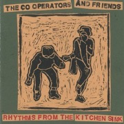
The Co-Operatorsbuy?, saved on Spotify
Rhythms from the Kitchen Sink
94 plays on 16 days, Dec 2025 to 10 Aug
▶ Manudigitalbuy?, saved on Spotify
Digital UK Session
8 tracks, 30 min · €10 or more · 26 plays on 10 days, Nov 2024 to 8 Aug
▶ Papoozbuy?
Papooz
9 plays on 3 days, 8 Feb to 7 Aug
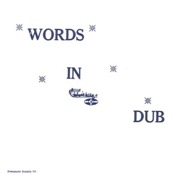
▶ Phillip Fullwood
Words In Dub
23 plays on 2 days, 3 Aug to 6 Aug
▶ SUSS
Counting Sunsets
10 tracks, 39 min · $10 or more · 10 plays on 1 day, 6 Aug
▶ AIRCHINAbuy?, saved on Spotify
LP 1
9 tracks, 52 min · €9 or more · 25 plays on 5 days, Jan 2026 to 6 Aug
▶ Mad Professorbuy?, saved on Spotify
Mad Professor Meets Channel One
10 tracks, 36 min · £10 or more · 27 plays on 7 days, Aug 2025 to 3 Aug
▶ Pulsharbuy?
Inside
12 tracks, 53 min · €7 or more · 12 plays on 3 days, Jan 2025 to 3 Aug
▶ SUBSETbuy?
Roots & Rhythms
6 tracks, 44 min · name your price · 24 plays on 7 days, 19 Jun to 3 Aug
▶ Stand High Patrolbuy?, saved on Spotify
Skanking & Jacking
12 tracks, 57 min · €10 or more · 27 plays on 4 days, 12 Jun to 2 Aug
▶ Tone Templebuy?, saved on Spotify
Fractured Depths
5 tracks, 36 min · €5 or more · 14 plays on 3 days, 20 Jun to 31 Jul
▶ Wackies
Wackies Sampler, Vol. 2
3 plays on 1 day, 29 Jul
Rhythm & Soundbuy?
See Mi Yah
13 plays on 3 days, Nov 2025 to 29 Jul
▶ Anchorsong
Mirage
10 tracks, 40 min · £4.99 or more · 18 plays on 2 days, 28 Jul to 29 Jul
▶ Uniting Of Opposites
Ancient Lights
8 tracks, 41 min · £9 or more · 4 plays on 1 day, 28 Jul
Art-Xbuy?, saved on Spotify
Tales of Melodia
135 plays on 26 days, Mar 2024 to 27 Jul
▶ Roger Robinsonbuy?, saved on Spotify
Heavy Vibes
10 tracks, 34 min · €7 or more · 28 plays on 6 days, Jul 2025 to 26 Jul
▶ Tone Templebuy?, saved on Spotify
Dirty Dusty Dubs
6 tracks, 45 min · €7 or more · 10 plays on 3 days, 22 Jun to 26 Jul
▶ GingerBeebuy?, saved on Spotify
Apiary
6 tracks, 23 min · name your price · 50 plays on 7 days, Sep 2025 to 25 Jul
▶ GingerBeebuy?, saved on Spotify
Our Skies Smile
6 tracks, 15 min · name your price · 30 plays on 5 days, Sep 2025 to 25 Jul
▶ Keith Hudson
Nuh Skin Up Dub
4 plays on 4 days, Sep 2025 to 25 Jul
▶ Sheriff Lindo and the Hammerbuy?, saved on Spotify
Ten Dubs That Shook The World
8 tracks, 49 min · ¥1,500 or more · 57 plays on 6 days, Sep 2025 to 25 Jul
▶ Solo Bantonbuy?, saved on Spotify
In This Time
19 plays on 3 days, Oct 2025 to 25 Jul
♪ Sly & Robbie
SLY FOREVER
8 plays on 1 day, 25 Jul
Biga*Ranxbuy?, saved on Spotify
1988
232 plays on 16 days, Jul 2025 to 24 Jul
▶ Lone Arkbuy?, saved on Spotify
Showcase Vol. 1
61 plays on 9 days, Apr 2024 to 23 Jul
▶ Marter & Yonybuy?, saved on Spotify
Rhythm Matter
8 tracks, 41 min · $12 or more · 126 plays on 12 days, 14 Jan to 22 Jul
▶ Ben Hackettbuy?, saved on Spotify
Songs for Sleeping Dogs
12 tracks, 56 min · $10 or more · 33 plays on 10 days, Jun 2025 to 22 Jul
▶ Froid Dubbuy?, saved on Spotify
Positive And Natural
77 plays on 12 days, 4 Apr to 21 Jul
▶ Blue Earth Soundbuy?, saved on Spotify
Cicero Nights
8 tracks, 23 min · £8 or more · 77 plays on 16 days, 27 Apr to 20 Jul
▶ Woobuy?
Whichever Way You Are Going, You Are Going Wrong
12 tracks, 51 min · £7 or more · 64 plays on 8 days, 16 Jan to 19 Jul
▶ ALIEN DREADbuy?, saved on Spotify
Conquering Dub (Remastered)
18 tracks, 66 min · name your price · 110 plays on 8 days, Dec 2025 to 16 Jul
▶ Alvvaysbuy?, saved on Spotify
Antisocialites
10 tracks, 33 min · $10 or more · 137 plays on 16 days, 24 Mar to 28 Jun
▶ Gaudibuy?, saved on Spotify
100 Years of Theremin (The Dub Chapter)
11 tracks, 39 min · £9 or more · 102 plays on 10 days, Dec 2025 to 25 Jun
▶ Nina Girassóisbuy?, saved on Spotify
Superfluido
158 plays on 16 days, Dec 2025 to 25 Jun
▶ E Ruscha Vbuy?, saved on Spotify
Who Are You
115 plays on 15 days, 26 Feb to 7 Jun
▶ Zentonebuy?, saved on Spotify
Messenger
9 tracks, 38 min · €9 or more · 107 plays on 16 days, Oct 2025 to 7 Jun
▶ Gaudibuy?, saved on Spotify
Jazz Gone Dub
9 tracks, 38 min · £9 or more · 81 plays on 13 days, Dec 2025 to 6 Jun
▶ Jamie Paigebuy?, saved on Spotify
Constant Companions (Deluxe Edition)
17 tracks, 70 min · $8 or more · 202 plays on 18 days, Sep 2025 to 25 May
▶ Dorothy Ashbybuy?, saved on Spotify
Dorothy's Harp
121 plays on 14 days, 14 Feb to 23 May
▶ Claude Fontainebuy?, saved on Spotify
La Mer
12 tracks, 37 min · $9.99 or more · 85 plays on 7 days, 11 Feb to 23 May
▶ A.R.T. Wilsonbuy?, saved on Spotify
Overworld
10 tracks, 38 min · $7 · 140 plays on 16 days, 26 Feb to 20 May
▶ µ-Ziqbuy?, saved on Spotify
1979
15 tracks, 61 min · €10 or more · 125 plays on 7 days, Nov 2025 to 10 May
▶ Monster Rallybuy?, saved on Spotify
Adventures on the Floating Island
17 tracks, 40 min · name your price · 91 plays on 7 days, 13 Feb to 7 May
▶ chloe moriondobuy?, saved on Spotify
oyster
13 tracks, 37 min · $9 or more · 76 plays on 7 days, 20 Mar to 2 May
♪ ▶ BLACK SHIPbuy?, saved on Spotify
Beautiful Days
127 plays on 14 days, Oct 2025 to 13 Mar
▶ Men I Trustbuy?, saved on Spotify
Equus Caballus
13 tracks, 42 min · name your price · 87 plays on 8 days, 5 Feb to 2 Mar
▶ Leon Thomasbuy?, saved on Spotify
Electric Dusk
189 plays on 16 days, Sep 2025 to 27 Feb
▶ Zentonebuy?, saved on Spotify
Zentone Chapter 2
10 tracks, 44 min · €9 or more · 101 plays on 10 days, Jan 2026 to 22 Feb
▶ Joe Yorkebuy?, saved on Spotify
Noise and Emptiness
173 plays on 16 days, Aug 2024 to 7 Feb
▶ Royabuy?
Cruise
143 plays on 5 days, Nov 2025 to Dec 2025
Worth buying The unowned albums you have played most over the last 3 years, weighted to recent plays: those past 8 plays on 3 days, the top 100 of them in a fresh order each load.
▶ Will Wiesenfeldsaved on Spotify
Bee and PuppyCat (Soundtrack from the Netflix Series) Vol. 1
793 plays on 25 days, 5 Feb to 10 Aug
▶ Papoozsaved on Spotify
RESONATE AUGMENTED
368 plays on 23 days, 31 Jan to 7 Sep
▶ Brian Wilsonsaved on Spotify
Orange Crate Art
327 plays on 29 days, 22 Mar to 30 Sep
The High Llamassaved on Spotify
Hawaii
265 plays on 11 days, 11 Apr to 22 Sep
▶ Woosaved on Spotify
Into the Heart Of Love
23 tracks, 69 min · £7 or more · 371 plays on 28 days, Jun 2025 to 19 Sep
▶ Alien Trackerssaved on Spotify
Dubs from Vortex Beach
12 tracks, 38 min · €9 or more · 237 plays on 20 days, 14 Jan to 30 Oct
▶ Count Dubulasaved on Spotify
The Rise Of Count Dubula
6 tracks, 22 min · $5 or more · 159 plays on 26 days, 17 Apr to 21 Aug
▶ Domenique Dumontsaved on Spotify
MINIATURES DE AUTO RHYTHM
8 tracks, 30 min · €8 or more · 139 plays on 21 days, Sep 2025 to 29 Oct
▶ Foxwarrensaved on Spotify
2
15 tracks, 37 min · $8 or more · 279 plays on 20 days, Jun 2025 to 29 Sep
Biga*Ranxsaved on Spotify
1988
232 plays on 16 days, Jul 2025 to 24 Jul
▶ Wackiessaved on Spotify
Jamaica Super Dub Session
120 plays on 16 days, Jun 2025 to 26 Sep
♪ GachaMedzsaved on Spotify
GACHA MEDZ DUB
79 plays on 8 days, 27 Aug to 28 Sep
▶ Rickard Jäverlingsaved on Spotify
Album 4
117 plays on 13 days, 12 Apr to 1 Sep
▶ Alvvayssaved on Spotify
Antisocialites
10 tracks, 33 min · $10 or more · 137 plays on 16 days, 24 Mar to 28 Jun
▶ A.R.T. Wilsonsaved on Spotify
Overworld
10 tracks, 38 min · $7 · 140 plays on 16 days, 26 Feb to 20 May
▶ Salvator Dragattosaved on Spotify
Thoughts Of You
11 tracks, 26 min · $10 or more · 80 plays on 5 days, 14 Apr to 15 Sep
▶ Nina Girassóissaved on Spotify
Superfluido
158 plays on 16 days, Dec 2025 to 25 Jun
▶ Zentonesaved on Spotify
Messenger
9 tracks, 38 min · €9 or more · 107 plays on 16 days, Oct 2025 to 7 Jun
▶ Joe Yorkesaved on Spotify
Noise and Emptiness
173 plays on 16 days, Aug 2024 to 7 Feb
▶ Zilla Dansaved on Spotify
Starlight Dub
65 plays on 3 days, 5 Sep to 8 Sep
▶ Adrian Quesada
Jaguar Sound
12 tracks, 35 min · $10 or more · 62 plays on 3 days, 13 Sep to 18 Sep
▶ Marter & Yonysaved on Spotify
Rhythm Matter
8 tracks, 41 min · $12 or more · 126 plays on 12 days, 14 Jan to 22 Jul
▶ Dorothy Ashbysaved on Spotify
Dorothy's Harp
121 plays on 14 days, 14 Feb to 23 May
The Co-Operatorssaved on Spotify
Sounds from the Fridge
104 plays on 14 days, Oct 2025 to 23 Oct
▶ E Ruscha Vsaved on Spotify
Who Are You
115 plays on 15 days, 26 Feb to 7 Jun
▶ Okonskisaved on Spotify
Magnolia
7 tracks, 29 min · $10 or more · 78 plays on 12 days, 13 May to 27 Aug
▶ Jamie Paigesaved on Spotify
Constant Companions (Deluxe Edition)
17 tracks, 70 min · $8 or more · 202 plays on 18 days, Sep 2025 to 25 May
▶ William Tylersaved on Spotify
Modern Country
7 tracks, 40 min · $9 or more · 80 plays on 16 days, 18 May to 19 Aug
▶ The Revolutionaries
Earthquake Dub
10 tracks, 31 min · $10 or more · 72 plays on 14 days, Jun 2025 to 31 Aug
▶ Target Demographicsaved on Spotify
Moments With You
8 tracks, 41 min · €10 or more · 57 plays on 8 days, 10 Aug to 1 Sep
▶ ALIEN DREADsaved on Spotify
Conquering Dub (Remastered)
18 tracks, 66 min · name your price · 110 plays on 8 days, Dec 2025 to 16 Jul
▶ Leon Thomassaved on Spotify
Electric Dusk
189 plays on 16 days, Sep 2025 to 27 Feb
▶ Blue Earth Soundsaved on Spotify
Cicero Nights
8 tracks, 23 min · £8 or more · 77 plays on 16 days, 27 Apr to 20 Jul
▶ µ-Ziqsaved on Spotify
1979
15 tracks, 61 min · €10 or more · 125 plays on 7 days, Nov 2025 to 10 May
▶ Roya
Cruise
143 plays on 5 days, Nov 2025 to Dec 2025
▶ Gaudisaved on Spotify
Jazz Gone Dub
9 tracks, 38 min · £9 or more · 81 plays on 13 days, Dec 2025 to 6 Jun
▶ Froid Dubsaved on Spotify
Positive And Natural
77 plays on 12 days, 4 Apr to 21 Jul
▶ Docetismsaved on Spotify
Breast And Vulture
10 tracks, 47 min · €1 or more · 93 plays on 13 days, Nov 2025 to 27 Aug
▶ Misha Panfilovsaved on Spotify
Days As Echoes
6 tracks, 35 min · €10 or more · 73 plays on 16 days, 13 Feb to 18 Aug
▶ Town Radiosaved on Spotify
Vol 1 & 2
13 tracks, 39 min · $7 or more · 160 plays on 17 days, Jan 2025 to 5 Nov
▶ SUSSsaved on Spotify
High Line
12 tracks, 41 min · $10 or more · 53 plays on 8 days, 6 Jun to 13 Aug
▶ Zentonesaved on Spotify
Zentone Chapter 2
10 tracks, 44 min · €9 or more · 101 plays on 10 days, Jan 2026 to 22 Feb
▶ Kaya Fyahsaved on Spotify
1994 (Born In The Jungle)
104 plays on 12 days, Nov 2025 to 19 Sep
▶ Monster Rallysaved on Spotify
Adventures on the Floating Island
17 tracks, 40 min · name your price · 91 plays on 7 days, 13 Feb to 7 May
▶ Gaudisaved on Spotify
100 Years of Theremin (The Dub Chapter)
11 tracks, 39 min · £9 or more · 102 plays on 10 days, Dec 2025 to 25 Jun
♪ ▶ BLACK SHIPsaved on Spotify
Beautiful Days
127 plays on 14 days, Oct 2025 to 13 Mar
▶ chloe moriondosaved on Spotify
oyster
13 tracks, 37 min · $9 or more · 76 plays on 7 days, 20 Mar to 2 May
▶ Claude Fontainesaved on Spotify
La Mer
12 tracks, 37 min · $9.99 or more · 85 plays on 7 days, 11 Feb to 23 May
The Co-Operatorssaved on Spotify
Rhythms from the Kitchen Sink
94 plays on 16 days, Dec 2025 to 10 Aug
▶ Woo
Whichever Way You Are Going, You Are Going Wrong
12 tracks, 51 min · £7 or more · 64 plays on 8 days, 16 Jan to 19 Jul
▶ Men I Trustsaved on Spotify
Equus Caballus
13 tracks, 42 min · name your price · 87 plays on 8 days, 5 Feb to 2 Mar
▶ Hamatsukisaved on Spotify
Oldies Vol 2
43 plays on 4 days, 8 Aug to 21 Aug
▶ Guess Whatsaved on Spotify
Solar Boats
10 tracks, 37 min · €10 or more · 74 plays on 8 days, 11 Mar to 28 Apr
▶ Wackies
African Roots Act 2
42 plays on 4 days, 30 Jul to 29 Aug
▶ Oracle Sisters
Hydranism
11 tracks, 38 min · $11.99 or more · 36 plays on 3 days, 17 Aug to 28 Sep
▶ Bunny Lee
Dubbing in the Front Yard & Conflict Dub
78 plays on 6 days, Jul 2024 to 30 Aug
▶ Tuff Scout All Starssaved on Spotify
Inna London Dub
109 plays on 14 days, Jan 2025 to 20 Aug
▶ Domenique Dumont
People on Sunday
13 tracks, 40 min · £5.99 or more · 71 plays on 14 days, Jun 2025 to 18 Jul
▶ Misha Panfilovsaved on Spotify
In Focus
14 tracks, 35 min · €10 or more · 40 plays on 4 days, 7 Aug to 17 Aug
▶ Resavoir
Themes for Dreams
13 tracks, 30 min · $10 or more · 63 plays on 5 days, 17 Mar to 17 Jul
▶ Oracle Sisters
Paris II
5 tracks, 19 min · $7 or more · 32 plays on 6 days, 19 Aug to 20 Oct
The 18th Parallelsaved on Spotify
Dub Avalanche (Vol. 1)
81 plays on 11 days, Dec 2025 to 7 Apr
▶ Tuff Scoutsaved on Spotify
Out On The Floor Dub
streams only · 76 plays on 9 days, 30 Jan to 22 Mar
Art-Xsaved on Spotify
Tales of Melodia
135 plays on 26 days, Mar 2024 to 27 Jul
▶ Another Channelsaved on Spotify
(dub) excursion (s)
8 tracks, 43 min · €12 or more · 88 plays on 15 days, Nov 2024 to 27 Aug
▶ Froid Dubsaved on Spotify
Tears Maker Chant
6 tracks, 22 min · £7 or more · 108 plays on 20 days, Oct 2025 to 23 Feb
▶ Subsetsaved on Spotify
Dub in Potentia
5 tracks, 31 min · £4 or more · 74 plays on 14 days, Dec 2025 to 20 Jun
▶ Molly Lewissaved on Spotify
Mirage
6 tracks, 22 min · $6 or more · 64 plays on 11 days, 11 Feb to 16 Jun
▶ Christoph El Truentosaved on Spotify
peace maker dub
56 plays on 8 days, Oct 2024 to 21 Jul
▶ Subsetsaved on Spotify
Pathfinder
11 tracks, 69 min · £8 or more · 72 plays on 11 days, Dec 2025 to 11 Jul
▶ Another Channelsaved on Spotify
Aphelion
8 tracks, 35 min · €12 or more · 41 plays on 11 days, Dec 2025 to 27 Aug
▶ Babe Rootssaved on Spotify
Takeover EP
6 tracks, 26 min · €5 or more · 47 plays on 16 days, Nov 2024 to 27 Aug
▶ Manudigitalsaved on Spotify
Mexico Sessions
137 plays on 25 days, Nov 2024 to 20 Aug
▶ Ambient Warriorsaved on Spotify
Dub Journey's
10 tracks, 43 min · $10 or more · 110 plays on 13 days, Jul 2025 to 19 Aug
▶ Misha Panfilovsaved on Spotify
Frutaria Electrónica
10 tracks, 38 min · €10 or more · 35 plays on 3 days, 19 Jul to 31 Aug
▶ Charlie Psaved on Spotify
Roots
11 tracks, 45 min · €11 or more · 86 plays on 14 days, Dec 2024 to 5 Nov
▶ Babe Rootssaved on Spotify
Babe Roots
6 tracks, 21 min · €8 or more · 68 plays on 11 days, Nov 2024 to 27 Aug
▶ Papooz
RESONATE
33 plays on 4 days, 2 Apr to 25 Oct
♪ ▶ Zilla Dansaved on Spotify
Twin Souls Dub
26 plays on 5 days, 5 Sep to 28 Sep
The Aggrovators
Prince Fatty Meets The Gorgon In Dub
62 plays on 14 days, Jul 2025 to 25 Aug
▶ Ultimate Paintingsaved on Spotify
Ultimate Painting
10 tracks, 35 min · $7 or more · 40 plays on 5 days, Dec 2024 to 21 Oct
▶ Mykal Rosesaved on Spotify
African Roots
52 plays on 7 days, Jun 2024 to 10 Oct
▶ Roots Architectssaved on Spotify
From Dub 'Til Now
9 tracks, 40 min · 10 or more · 35 plays on 11 days, Aug 2025 to 1 Sep
Jimmy Radway & The Fe Me Time All Stars
Dub I
39 plays on 3 days, Dec 2025 to 5 Oct
▶ Sheriff Lindo and the Hammersaved on Spotify
Ten Dubs That Shook The World
8 tracks, 49 min · ¥1,500 or more · 57 plays on 6 days, Sep 2025 to 25 Jul
♪ ▶ Junioresaved on Spotify
Dub Remixes & Instrumentals
40 plays on 5 days, 11 Feb to 21 Aug
▶ Oracle Sisters
Divinations
11 tracks, 43 min · €11 or more · 22 plays on 3 days, 16 Aug to 2 Oct
▶ Mathimidorisaved on Spotify
Akebono
10 tracks, 63 min · €8 or more · 31 plays on 12 days, 28 May to 16 Aug
▶ Noda & Wolferssaved on Spotify
Tascam Space Season
7 tracks, 35 min · name your price · 36 plays on 5 days, Jan 2026 to 31 Aug
▶ Stand High Patrolsaved on Spotify
Skanking & Jacking
12 tracks, 57 min · €10 or more · 27 plays on 4 days, 12 Jun to 2 Aug
▶ Ultimate Painting
Green Lanes
12 tracks, 31 min · $7 · 28 plays on 6 days, Jan 2024 to 19 Oct
▶ The Aggrovators
Dubbing At King Tubby's
44 tracks, 150 min · $24 or more · 61 plays on 19 days, Aug 2024 to 25 Aug
▶ Summer 2000saved on Spotify
Ellie Kemper
10 tracks, 28 min · name your price · 22 plays on 3 days, 25 Jul to 16 Aug
▶ Ben Hackettsaved on Spotify
Songs for Sleeping Dogs
12 tracks, 56 min · $10 or more · 33 plays on 10 days, Jun 2025 to 22 Jul
▶ Lone Arksaved on Spotify
Showcase Vol. 1
61 plays on 9 days, Apr 2024 to 23 Jul
▶ SUBSET
Roots & Rhythms
6 tracks, 44 min · name your price · 24 plays on 7 days, 19 Jun to 3 Aug
▶ Dub Syndicatesaved on Spotify
Classic Selection Volume 1
17 tracks, 73 min · £5 or more · 34 plays on 5 days, Jul 2025 to 30 Aug
▶ Another Channelsaved on Spotify
Behind The Glow
10 tracks, 45 min · €12 or more · 61 plays on 16 days, Nov 2024 to 20 Aug
▶ Michael Rose
African Roots
40 plays on 3 days, Jun 2024 to 10 Oct
▶ Jeffrey Silversteinsaved on Spotify
Western Sky Music
9 tracks, 31 min · $10 or more · 22 plays on 5 days, Jun 2025 to 19 Aug
Wishlist Your Bandcamp wishlist, fetched each build and in a fresh order each load. Tap a cover to stream.
▶ SUBSET
Call of the Whipbird
5 tracks · wished 6 Nov
▶ Town Radio
Vol. 1 & 2
13 tracks · wished 6 Nov
▶ Charlie P
Roots
11 tracks · wished 5 Nov
▶ DUB JUDAH
Make a Joyful Noise
2 tracks · wished 2 Nov
▶ Alice Phoebe Lou
Shelter
9 tracks · wished 2 Nov
▶ Daniel Rossen
You Belong There
10 tracks · wished 1 Nov
▶ Generationals
Heza
10 tracks · wished 1 Nov
▶ Chip Wickham
Cloud 10
8 tracks · wished 30 Oct
▶ Marcus Gad & Tribe
Chanting
13 tracks · wished 29 Oct
▶ Domenique Dumont
MINIATURES DE AUTO RHYTHM
8 tracks · wished 29 Oct
▶ Alien Trackers
Dubs from Vortex Beach
12 tracks · wished 29 Oct
Exploit Albums in the library the model thinks you will want now, in a fresh order each time the page loads: a Thompson draw from each album's score and uncertainty. The ones on the Swinsian playlist are marked.
▶ Okonskion the playlist
Entrance Music
2025 · 9 tracks, 33 min · logit +3.9 ± 1.5 · $10 or more
▶ Domenique Dumonton the playlist
Deux Paradis
2025 · 10 tracks, 38 min · logit +3.7 ± 1.5 · €9 or more
▶ Dick Stussoon the playlist
In Heaven
2018 · 10 tracks, 30 min · logit +3.5 ± 1.2 · $10 or more
▶ Rachel Kitchlew, SHOLTO, David Bardonon the playlist
Flirty Ghost
2025 · 12 tracks, 53 min · logit +2.9 ± 1.2 · €7 or more
▶ Art-Xon the playlist
Art-X & The Roots Addict - Polarity
2020 · 6 tracks, 23 min · logit +2.6 ± 0.7 · €5 or more
▶ Huw Marc Bennetton the playlist
Days Like Now
2023 · 7 tracks, 33 min · logit +2.6 ± 0.9 · £8 or more
Tren Brotherson the playlist
EP
1997 · 5 tracks, 28 min · logit +2.3 ± 1.7
Play in Swinsian
▶ Triolaon the playlist
Triola im Fünftonraum
2004 · 10 tracks, 48 min · logit +1.9 ± 0.8 · €10 or more
▶ Tulsa Droneon the playlist
No Wake
2004 · 9 tracks, 37 min · logit +1.6 ± 0.8 · $8 or more
The Orbon the playlist
Orblivion (bonus disc: The Remixes)
2008 · 9 tracks, 80 min · logit +1.4 ± 0.4
Play in Swinsian
▶ Acetoneon the playlist
1992 - 2001
2017 · 16 tracks, 77 min · logit +1.4 ± 0.5 · $8.99 or more
Twilight Circus Dub Sound Systemon the playlist
Dub Plates Volume Two
2000 · 10 tracks, 42 min · logit +1.1 ± 0.4
Play in Swinsian
The American Analog Seton the playlist
Know by Heart
2001 · 12 tracks, 41 min · logit +1.0 ± 0.4
Play in Swinsian
▶ Kiasmoson the playlist
Kiasmos
2014 · 8 tracks, 51 min · logit +0.6 ± 0.6 · £10 or more
▶ Aphex Twinon the playlist
Selected Ambient Works 85-92
13 tracks, 75 min · logit +0.6 ± 0.4 · £8 or more
Omon the playlist
On The Mountain At Dawn
2005 · 21 min · logit +0.6 ± 0.7
Play in Swinsian
Gold Pandaon the playlist
Marriage (Forest Swords Mix)
2011 · 5 tracks, 22 min · logit +0.6 ± 1.4
Play in Swinsian
♪ The Beach Boyson the playlist
Holland / Mt Vernon and Fairway (A Fairy Tale)
1990 · 15 tracks, 48 min · logit +0.6 ± 0.3
Play in Swinsian
Junior Delahayeon the playlist
Showcase
2002 · 6 tracks, 32 min · logit +0.5 ± 0.7
Play in Swinsian
Various Artistson the playlist
Jahtarian Dubbers Vol. 1
2008 · 10 tracks, 40 min · logit +0.4 ± 0.7
Play in Swinsian
Department Of Eagleson the playlist
In Ear Park
2008 · 11 tracks, 42 min · logit +0.4 ± 0.5
Play in Swinsian
Deadbeaton the playlist
Radio Rothko
19 tracks, 67 min · logit +0.3 ± 1.1
Play in Swinsian
Bob Marleyon the playlist
Confrontation
2001 · 11 tracks, 46 min · logit +0.3 ± 0.6
Play in Swinsian
Cultureon the playlist
Two Sevens Clash
2011 · 10 tracks, 33 min · logit +0.3 ± 0.5
Play in Swinsian
Jimmy Cliffon the playlist
The Harder They Come
1972 · 12 tracks, 40 min · logit +0.2 ± 0.8
Play in Swinsian
▶ Kabaka Pyramidon the playlist
Lead The Way
2013 · 10 tracks, 38 min · logit +0.2 ± 0.7
Dub Boyon the playlist
Reggae & Dancehall Mix - October 2007
2007 · 56 min · logit +0.2 ± 1.3
Play in Swinsian
Trickyon the playlist
Maxinquaye
12 tracks, 57 min · logit +0.2 ± 0.5
Play in Swinsian
Deep Foreston the playlist
Deep Forest
1992 · 11 tracks, 49 min · logit +0.1 ± 0.4
Play in Swinsian
Fugazion the playlist
13 Songs
1989 · 10 tracks, 31 min · logit +0.1 ± 0.5
Play in Swinsian
Midniteon the playlist
Beauty For Ashes
2014 · 13 tracks, 60 min · logit +0.1 ± 0.5
Play in Swinsian
Freddie McGregoron the playlist
Mr. McGregor
2009 · 17 tracks, 74 min · logit +0.0 ± 0.4
Play in Swinsian
Labradfordon the playlist
A Stable Reference
9 tracks, 46 min · logit +0.0 ± 0.4
Play in Swinsian
▶ Emeraldson the playlist
Just to Feel Anything
2012 · 7 tracks, 42 min · logit -0.0 ± 0.9 · $8 or more
Barrington Levyon the playlist
Englishman
2010 · 14 tracks, 60 min · logit -0.0 ± 0.4
Play in Swinsian
The Free Designon the playlist
The Best Of
2001 · 20 tracks, 63 min · logit -0.0 ± 0.5
Play in Swinsian
The Shinson the playlist
Wincing the Night Away
2007 · 11 tracks, 42 min · logit -0.0 ± 0.4
Play in Swinsian
Parquet Courtson the playlist
Light Up Gold [Explicit]
2013 · 15 tracks, 33 min · logit -0.0 ± 0.4
Play in Swinsian
Boards of Canadaon the playlist
Tomorrow's Harvest
2013 · 17 tracks, 62 min · logit -0.1 ± 0.3
Play in Swinsian
Do Make Say Thinkon the playlist
Goodbye Enemy Airship The Landlord Is Dead
2000 · 7 tracks, 49 min · logit -0.1 ± 0.4
Play in Swinsian
▶ Marek Hemmannon the playlist
Bittersweet
2013 · 10 tracks, 51 min · logit -0.1 ± 1.4 · €8.99 or more
▶ Pablo Gadon the playlist
Trafalgar Square
2012 · 10 tracks, 40 min · logit -0.1 ± 0.8 · £7 or more
Hallucinogenon the playlist
In Dub mixed by Ott
2002 · 6 tracks, 60 min · logit -0.1 ± 1.2
Play in Swinsian
▶ All Night Radioon the playlist
Spirit Stereo Frequency
2004 · 10 tracks, 42 min · logit -0.1 ± 0.6 · £7 or more
▶ Synkroon the playlist
Acceptance EP
2013 · 8 tracks, 35 min · logit -0.1 ± 0.8 · £5 or more
▶ 2562on the playlist
Aerial
2008 · 10 tracks, 51 min · logit -0.1 ± 0.7 · £9.99 or more
▶ Black Slateon the playlist
Amigo
2013 · 8 tracks, 33 min · logit -0.1 ± 0.8 · £7 or more
▶ Prince Hammeron the playlist
World War Dub: Part 1
2013 · 10 tracks, 33 min · logit -0.1 ± 0.5
▶ Sceptreon the playlist
Essence of Redemption Ina Dif'rent Styley
2014 · 10 tracks, 49 min · logit -0.1 ± 0.7 · £7 or more
Fonki Cheffon the playlist
Roots, Reggae, Rocksteady mix Fonki Cheff
2022 · 42 min · logit -0.1 ± 0.8
Play in Swinsian
▶ Johnny Osbourne
Fally Lover
10 tracks, 36 min · logit -0.1 ± 0.4 · $12 or more
The Beatles
Anthology 2 - Disc 1
1996 · 25 tracks, 64 min · logit -0.1 ± 0.3
Play in Swinsian
♪ Terrapin
Glockenspiel madness
6 tracks, 19 min · logit -0.1 ± 0.8
Play in Swinsian
▶ Dub Trees
Nature Never Did Betray the Heart That Loved Her
11 tracks, 73 min · logit -0.1 ± 0.6 · £9 or more
desert sand feels warm at night
Disciples of the New World
2021 · 8 tracks, 78 min · logit -0.1 ± 0.5
Play in Swinsian
The Moody Blues
A Question of Balance
1970 · 10 tracks, 39 min · logit -0.1 ± 0.6
Play in Swinsian
Massive Attack
100th Window
2003 · 9 tracks, 74 min · logit -0.1 ± 0.8
Play in Swinsian
Herman Chin Loy
Aquarius Dub
2012 · 10 tracks, 28 min · logit -0.1 ± 0.6
Play in Swinsian
▶ of Montreal
Satanic Panic In The Attic
2004 · 14 tracks, 44 min · logit -0.1 ± 0.5 · $10 or more
Prince Far I
Crytuff Dub Encounter: Chapter One
1976 · 10 tracks, 39 min · logit -0.1 ± 0.8
Play in Swinsian
Air
Premiers Symptomes
1999 · 7 tracks, 34 min · logit -0.1 ± 1.0
Play in Swinsian
The Band
The Last Waltz -Box Set Disc 1
2002 · 6 tracks, 29 min · logit -0.1 ± 0.8
Play in Swinsian
▶ Keith Hudson
Pick a Dub
1994 · 12 tracks, 35 min · logit -0.1 ± 0.4 · $16 or more
▶ Mungo's Hi Fi
Serious Time
2014 · 15 tracks, 59 min · logit -0.1 ± 0.8 · £9 or more
Don Carlos
Just A Passing Glance
10 tracks, 33 min · logit -0.1 ± 0.5
Play in Swinsian
Daft Punk
Homework
1997 · 16 tracks, 74 min · logit -0.1 ± 0.8
Play in Swinsian
Radiohead
I Might Be Wrong- Live Recordi
2001 · 8 tracks, 40 min · logit -0.1 ± 0.6
Play in Swinsian
Smashing Pumpkins
SIAMESE DREAM
2001 · 13 tracks, 62 min · logit -0.1 ± 1.2
Play in Swinsian
Songs- Ohia
The Magnolia Electric Co
2001 · 8 tracks, 45 min · logit -0.2 ± 0.4
Play in Swinsian
▶ Sleep
Sleep's Holy Mountain
1993 · 9 tracks, 52 min · logit -0.2 ± 0.8 · $8 or more
Fela Kuti
Anthology, Vol. 1 Disc 2
2007 · 6 tracks, 77 min · logit -0.2 ± 1.4
Play in Swinsian
Creedence Clearwater Revival
Cosmo's Factory
1970 · 11 tracks, 43 min · logit -0.2 ± 0.5
Play in Swinsian
▶ Shipping News
Very soon, and in pleasant company
2001 · 7 tracks, 44 min · logit -0.2 ± 0.9 · $7 or more
♪ Blood Shanti & The Shanti - Ites
Pure Spirit
1996 · 12 tracks, 53 min · logit -0.2 ± 0.5
Play in Swinsian
Stars of the Lid
The Ballasted Orchestra
1996 · 16 tracks, 156 min · logit -0.2 ± 0.6
Play in Swinsian
Joe Gibbs & The Professionals
African Dub All-Mighty Chapter Three & Four
20 tracks, 71 min · logit -0.2 ± 0.3
Play in Swinsian
Prince Fatty
Survival of the Fattest
2003 · 12 tracks, 40 min · logit -0.2 ± 0.4
Play in Swinsian
Gang of Four
Entertainment!
1980 · 15 tracks, 51 min · logit -0.2 ± 0.5
Play in Swinsian
Queen
Greatest Hits
17 tracks, 58 min · logit -0.2 ± 0.7
Play in Swinsian
Grandaddy
The Sophtware Slump
2001 · 12 tracks, 50 min · logit -0.2 ± 0.8
Play in Swinsian
Doves
Lost Souls
2001 · 12 tracks, 59 min · logit -0.2 ± 0.5
Play in Swinsian
▶ Zoë Blade
Winter
2011 · 13 tracks, 34 min · logit -0.2 ± 0.4 · £6.50 or more
Dadawah
Peace And Love
2010 · 4 tracks, 38 min · logit -0.2 ± 1.6
Play in Swinsian
▶ Scuba
Triangulation
12 tracks, 62 min · logit -0.2 ± 0.5 · £8 or more
King Crimson
In THe Court Of Crimson King
5 tracks, 44 min · logit -0.2 ± 0.8
Play in Swinsian
▶ Can
Ege Bamyasi
1972 · 7 tracks, 40 min · logit -0.2 ± 0.7 · $9.99
Stornoway
On the Rocks
5 tracks, 19 min · logit -0.2 ± 0.6
Play in Swinsian
Steel Pulse
Sound System: The Island Anthology
1997 · 30 tracks, 152 min · logit -0.2 ± 0.3
Play in Swinsian
The Unicorns
Unicorns Are People Too
2003 · 9 tracks, 35 min · logit -0.2 ± 0.5
Play in Swinsian
Fontanelle
F
2001 · 7 tracks, 37 min · logit -0.2 ± 0.6
Play in Swinsian
Gregory Isaacs
Soon Forward - Cool Ruler
14 tracks, 51 min · logit -0.2 ± 0.4
Play in Swinsian
Pole
1
1998 · 9 tracks, 51 min · logit -0.2 ± 0.7
Play in Swinsian
Paul Anka
Paul Anka, The Most of
1994 · 20 tracks, 50 min · logit -0.2 ± 0.7
Play in Swinsian
♪ Godspeed You! Black Emperor
Storm: Lift Yr. Skinny Fists Like Antennas To Heaven / Gathering Storm / "Welcome To Barco Am/Pm..." / Cancer Towers On Holy Road Hi-Way
2000 · 23 min · logit -0.2 ± 1.1
Play in Swinsian
▶ Acid King
Busse Woods
2004 · 8 tracks, 57 min · logit -0.2 ± 0.5 · $10 or more
Various
Trish's Mind Bending Motorway Mix
17 tracks, 50 min · logit -0.2 ± 0.5
Play in Swinsian
Twilight Sound System
Cultural Roots Showcase
2007 · 7 tracks, 43 min · logit -0.2 ± 0.5
Play in Swinsian
AC/DC
Highway to Hell
1979 · 10 tracks, 42 min · logit -0.2 ± 0.5
Play in Swinsian
Herman's Hermits
A's, B's & EP's
2004 · 24 tracks, 59 min · logit -0.2 ± 0.7
Play in Swinsian
Talk Talk
Spirit of Eden
1997 · 6 tracks, 41 min · logit -0.2 ± 0.7
Play in Swinsian
Revolutionaries
Goldmine Dub
10 tracks, 33 min · logit -0.2 ± 0.5
Play in Swinsian
▶ Jungle
Jungle
2014 · 12 tracks, 39 min · logit -0.2 ± 0.5 · $6
Electric Wizard
Dopethrone
2000 · 8 tracks, 71 min · logit -0.2 ± 0.7
Play in Swinsian
▶ Ativin
Interiors
11 tracks, 38 min · logit -0.2 ± 0.5 · $11 or more
▶ YOB
Catharsis
2013 · 24 min · logit -0.2 ± 1.1 · $7.99 or more
▶ Interpol
Turn On The Bright Lights
2002 · 12 tracks, 56 min · logit -0.2 ± 0.5 · £9.99 or more
Ini Kamoze
Ini Kamoze
1985 · 6 tracks, 32 min · logit -0.2 ± 0.7
Play in Swinsian
▶ The Walkmen
You & Me
2008 · 14 tracks, 51 min · logit -0.2 ± 0.5 · $10 or more
Beach Boys
Today! & Summer Days (And Summer Nights!!)
28 tracks, 65 min · logit -0.2 ± 0.4
Play in Swinsian
The Higher Intelligence Agency
Freefloater
1995 · 10 tracks, 70 min · logit -0.2 ± 0.6
Play in Swinsian
Yabby You Meets Mad Professor & Black Steel
Yabby You Meets Mad Professor & Black Steel In Ariwa Studio
1993 · 11 tracks, 48 min · logit -0.2 ± 0.6
Play in Swinsian
Mungos Hi Fi
Forward Ever
2011 · 15 tracks, 56 min · logit -0.2 ± 0.4
Play in Swinsian
▶ Bark Psychosis
Hex
7 tracks, 51 min · logit -0.2 ± 0.7 · £7 or more
▶ Abfahrt Hinwil
Links Berge Rechts Seen
2002 · 13 tracks, 50 min · logit -0.2 ± 0.5 · €8 or more
▶ Grizzly Bear
Yellow House
10 tracks, 50 min · logit -0.2 ± 0.4 · £9 or more
Sloth
The Voice Of God
2001 · 7 tracks, 61 min · logit -0.2 ± 0.9
Play in Swinsian
▶ New Phono
Troubleshoot the Rain
2025 · 12 tracks, 42 min · logit -0.2 ± 0.9 · $5 or more
Disrupt
The Bass Has Left the Building
2009 · 12 tracks, 39 min · logit -0.2 ± 0.5
Play in Swinsian
Bird Blobs
The Birdblobs
11 tracks, 40 min · logit -0.2 ± 0.8
Play in Swinsian
▶ EOD
Utrecht
2010 · 6 tracks, 24 min · logit -0.2 ± 1.4 · $6 or more
The Dylan Group
Ur-klang Search
2000 · 11 tracks, 74 min · logit -0.2 ± 0.5
Play in Swinsian
▶ Pinch
Underwater Dancehall (with vocals)
2007 · 10 tracks, 44 min · logit -0.2 ± 0.6 · £10.99 or more
▶ Joe Higgs
Life of Contradiction
2008 · 12 tracks, 41 min · logit -0.2 ± 0.6 · £10 or more
▶ Cindy Lee
Diamond Jubilee
2024 · 32 tracks, 122 min · logit -0.2 ± 0.7 · $20
Cat Power
The Greatest
2006 · 12 tracks, 42 min · logit -0.2 ± 0.4
Play in Swinsian
▶ The Melodians
Rivers Of Babylon
1972 · 26 tracks, 77 min · logit -0.2 ± 0.7 · £8 or more
▶ Melody's Echo Chamber
Melody's Echo Chamber
2012 · 11 tracks, 45 min · logit -0.2 ± 0.5 · $9 or more
▶ Solo Banton
Music Addict EP
2011 · 6 tracks, 18 min · logit -0.2 ± 0.7 · €4 or more
godspeed you black emperor!
providence
1998 · 29 min · logit -0.2 ± 1.1
Play in Swinsian
The Kinks
Soundtrack from the film Percy
2001 · 13 tracks, 33 min · logit -0.2 ± 0.4
Play in Swinsian
Dennis Brown
Money In My Pocket: The Definitive Collection
19 tracks, 79 min · logit -0.2 ± 0.5
Play in Swinsian
Morcheeba
Who Can You Trust?
1996 · 12 tracks, 56 min · logit -0.2 ± 0.7
Play in Swinsian
Black Uhuru
The Dub Factor
10 tracks, 39 min · logit -0.2 ± 0.6
Play in Swinsian
▶ Electrelane
The power out
11 tracks, 43 min · logit -0.2 ± 0.7 · $9.99 or more
Jah9
New Name
2013 · 12 tracks, 49 min · logit -0.2 ± 0.8
Play in Swinsian
American Analog Set
Promise Of Love
2003 · 8 tracks, 39 min · logit -0.2 ± 0.6
Play in Swinsian
Yellowman
Mister Yellowman
2010 · 10 tracks, 38 min · logit -0.2 ± 0.5
Play in Swinsian
Washed Out
Life Of Leisure
2010 · 6 tracks, 17 min · logit -0.2 ± 1.0
Play in Swinsian
▶ Neutral Milk Hotel
In the Aeroplane Over the Sea
1998 · 11 tracks, 40 min · logit -0.2 ± 0.6 · $9 or more
The Beta Band
Hot Shots II
2001 · 10 tracks, 46 min · logit -0.2 ± 0.5
Play in Swinsian
Marvin Gaye
What's Going On
1971 · 9 tracks, 36 min · logit -0.2 ± 1.0
Play in Swinsian
Lacksley Castell
Morning Glory
2008 · 9 tracks, 32 min · logit -0.2 ± 0.6
Play in Swinsian
Iron Monkey
Iron Monkey
1997 · 6 tracks, 38 min · logit -0.2 ± 0.6
Play in Swinsian
Cate Le Bon
Mug Museum
2013 · 10 tracks, 42 min · logit -0.2 ± 0.8
Play in Swinsian
The For Carnation
The For Carnation
-1 · 6 tracks, 44 min · logit -0.2 ± 0.6
Play in Swinsian
Magnolia Electric Co.
Fading Trails
9 tracks, 28 min · logit -0.2 ± 0.5
Play in Swinsian
East Of Oceans
121 Years
2012 · 7 tracks, 78 min · logit -0.2 ± 0.9
Play in Swinsian
Dennis Wilson
Pacific Ocean Blue
2008 · 33 tracks, 113 min · logit -0.2 ± 0.6
Play in Swinsian
Mogwai
come on die young
1999 · 12 tracks, 68 min · logit -0.2 ± 0.5
Play in Swinsian
Wayne Jarrett
Chip In
2007 · 14 tracks, 69 min · logit -0.2 ± 0.5
Play in Swinsian
slint
spiderland
6 tracks, 40 min · logit -0.2 ± 0.6
Play in Swinsian
▶ Madvillain
Madvillainy [Explicit]
22 tracks, 46 min · logit -0.2 ± 0.9 · $9.99 or more
▶ Art of Fighting
Wires
2002 · 11 tracks, 56 min · logit -0.2 ± 1.5 · $8 or more
▶ The Bees
Sunshine Hit Me
11 tracks, 40 min · logit -0.2 ± 0.5 · £12
Smog
Red Apple Falls
1997 · 9 tracks, 43 min · logit -0.2 ± 0.5
Play in Swinsian
The Dub Syndicate
Special King Size Dub
2012 · 15 tracks, 77 min · logit -0.2 ± 0.7
Play in Swinsian
The Breadwinners
Dubs Unlimited
2012 · 15 tracks, 52 min · logit -0.2 ± 0.6
Play in Swinsian
Phase Selector Sound
Disassemble Dub
1999 · 15 tracks, 53 min · logit -0.2 ± 0.6
Play in Swinsian
▶ Calexico
Feast of Wire
2003 · 16 tracks, 48 min · logit -0.2 ± 0.3 · €9 or more
Zomby
Dedication
2011 · 16 tracks, 36 min · logit -0.2 ± 0.4
Play in Swinsian
Paul St. Hilaire
Nah Ina It EP
2013 · 4 tracks, 16 min · logit -0.2 ± 0.9
Play in Swinsian
Oddisee
Rock Creek Park
2011 · 10 tracks, 43 min · logit -0.3 ± 1.1
Play in Swinsian
Belle and Sebastian
If You’re Feeling Sinister
10 tracks, 41 min · logit -0.3 ± 0.7
Play in Swinsian
Lesley Gore
The Golden Hits Of Lesley Gore
1987 · 18 tracks, 43 min · logit -0.3 ± 0.7
Play in Swinsian
Talking Heads
Talking Heads- 77
1977 · 11 tracks, 39 min · logit -0.3 ± 0.8
Play in Swinsian
♪ Tucker Bs
QSR Backyard Extravagansa
2001 · 9 tracks, 53 min · logit -0.3 ± 0.7
Play in Swinsian
Mastodon
Leviathan
2004 · 10 tracks, 47 min · logit -0.3 ± 0.6
Play in Swinsian
♪ Shanti-ites in Oneness with Emmanual Joseph
Psalms from the heart
14 tracks, 61 min · logit -0.3 ± 0.4
Play in Swinsian
Arab Strap
The Red Thread
2001 · 10 tracks, 57 min · logit -0.3 ± 1.0
Play in Swinsian
♪ DUB-4
SH.MIXTAPE.18 - DUB-4
20140627 · 56 min · logit -0.3 ± 1.1
Play in Swinsian
▶ Miles Davis
Kind of Blue
5 tracks, 45 min · logit -0.3 ± 0.8 · €7 or more
▶ Bob Marley & The Wailers
Legend
14 tracks, 62 min · logit -0.3 ± 0.5 · $1.50
▶ TOPS
Tender Opposites
2012 · 8 tracks, 33 min · logit -0.3 ± 0.6 · $10 or more
Brian Wilson
Smile
2004 · 17 tracks, 47 min · logit -0.3 ± 0.6
Play in Swinsian
Built To Spill
Perfect From Now On
1997 · 8 tracks, 54 min · logit -0.3 ± 0.6
Play in Swinsian
Bob Dylan
Desire
2004 · 9 tracks, 56 min · logit -0.3 ± 0.4
Play in Swinsian
Loscil
Triple Point
2001 · 10 tracks, 59 min · logit -0.3 ± 0.6
Play in Swinsian
Ijahman Levi
Haile I Hymn
2008 · 4 tracks, 37 min · logit -0.3 ± 1.0
Play in Swinsian
woob
woob 1194
2009 · 6 tracks, 73 min · logit -0.3 ± 0.7
Play in Swinsian
Commix / Burial / Marcel Dettmann / Various
Re:Call To Mind
2010 · 11 tracks, 72 min · logit -0.3 ± 0.7
Play in Swinsian
Tame Impala
Lonerism
2012 · 12 tracks, 52 min · logit -0.3 ± 0.7
Play in Swinsian
Burning Spear
Marcus Garvey / Garvey's Ghost
1990 · 20 tracks, 72 min · logit -0.3 ± 0.4
Play in Swinsian
♪ The Mamas & the Papas
The Best of The Mamas & the Papas
20 tracks, 59 min · logit -0.3 ± 0.5
Play in Swinsian
The Black Heart Procession
2
2001 · 11 tracks, 51 min · logit -0.3 ± 0.6
Play in Swinsian
Pink Floyd
Animals
5 tracks, 42 min · logit -0.3 ± 0.8
Play in Swinsian
The Concretes
The Concretes
2004 · 11 tracks, 40 min · logit -0.3 ± 0.5
Play in Swinsian
♪ Roy Orbison
All Time Greatest Hits, Volume 1
1982 · 10 tracks, 27 min · logit -0.3 ± 0.5
Play in Swinsian
Lee "Scratch" Perry & The Upsetters
Super Ape [Bonus Tracks]
2004 · 13 tracks, 54 min · logit -0.3 ± 0.5
Play in Swinsian
Ground Components
Ground Components
2003 · 8 tracks, 32 min · logit -0.3 ± 0.7
Play in Swinsian
Oasis
( what's the story) moring glory?
1995 · 12 tracks, 50 min · logit -0.3 ± 0.6
Play in Swinsian
Scientist
The Best Dub Album In The World
2010 · 10 tracks, 27 min · logit -0.3 ± 0.6
Play in Swinsian
Creation Rebel
Dub from Creation
2004 · 12 tracks, 44 min · logit -0.3 ± 0.6
Play in Swinsian
Deep Beep
Mind the Brain
2023 · 8 tracks, 40 min · logit -0.3 ± 1.1
Play in Swinsian
Gladiators
Back To Roots
2000 · 14 tracks, 64 min · logit -0.3 ± 0.8
Play in Swinsian
Prodigy
Music For The Jilted Generation
1994 · 13 tracks, 78 min · logit -0.3 ± 0.5
Play in Swinsian
Ricaine
Regret is an Inevitable Consequence of Life
2001 · 10 tracks, 47 min · logit -0.3 ± 1.6
Play in Swinsian
The Modern Lovers
The Modern Lovers [UK Bonus Tracks]
2003 · 17 tracks, 62 min · logit -0.3 ± 0.5
Play in Swinsian
Stereolab
Dots And Loops
2001 · 10 tracks, 66 min · logit -0.3 ± 0.6
Play in Swinsian
Neil Sedaka
Greatest Hits
1959 · 25 tracks, 66 min · logit -0.3 ± 0.8
Play in Swinsian
Paul Simon
Graceland
1986 · 11 tracks, 43 min · logit -0.3 ± 0.5
Play in Swinsian
The Clientele
Strange Geometry
2005 · 12 tracks, 42 min · logit -0.3 ± 0.5
Play in Swinsian
Pablo Moses
Revolutionary Dream
2005 · 11 tracks, 44 min · logit -0.3 ± 0.6
Play in Swinsian
Yabby You
Conquering Lion
2009 · 10 tracks, 30 min · logit -0.3 ± 0.6
Play in Swinsian
Burnt Friedman & The Nu Dub Players
Just Landed
1999 · 10 tracks, 36 min · logit -0.3 ± 0.7
Play in Swinsian
Talisman
Dole Age - The 1981 Reggae Collection
2011 · 11 tracks, 74 min · logit -0.3 ± 1.0
Play in Swinsian
King Tubby
Declaration of Dub
2002 · 20 tracks, 67 min · logit -0.3 ± 0.5
Play in Swinsian
DJ Shadow
Endtroducing....
1996 · 16 tracks, 63 min · logit -0.3 ± 0.7
Play in Swinsian
Samsara Blues Experiment
Long Distance Trip
2010 · 6 tracks, 66 min · logit -0.3 ± 0.9
Play in Swinsian
♪ ペッカー
Pecker Power + Rasta Instantane
1980 · 14 tracks, 59 min · logit -0.3 ± 0.6
Play in Swinsian
The Chemical Brothers
Exit Planet Dust
1995 · 11 tracks, 49 min · logit -0.3 ± 0.9
Play in Swinsian
Astrobotnia
Part 01
2002 · 9 tracks, 36 min · logit -0.3 ± 0.7
Play in Swinsian
Nick Cave & The Bad Seeds
The Best Of
2001 · 17 tracks, 82 min · logit -0.3 ± 1.4
Play in Swinsian
Dusty Springfield
Best of Dusty Springfield
26 tracks, 81 min · logit -0.3 ± 0.6
Play in Swinsian
Tucker B's
Nightmares In The Key Of (((((WOW)))))
2009 · 10 tracks, 40 min · logit -0.3 ± 0.7
Play in Swinsian
Tortoise
Millions Now Living Will Never Die
2001 · 6 tracks, 43 min · logit -0.3 ± 0.7
Play in Swinsian
The Doors
L.A. Woman
1971 · 10 tracks, 49 min · logit -0.3 ± 0.5
Play in Swinsian
The Apples In Stereo
Tone Soul Evolution
1997 · 14 tracks, 40 min · logit -0.3 ± 0.8
Play in Swinsian
Aswad
Hulet
2003 · 8 tracks, 42 min · logit -0.3 ± 0.5
Play in Swinsian
Horace Andy
In The Light - In The Light Dub
2007 · 20 tracks, 78 min · logit -0.3 ± 0.4
Play in Swinsian
Beanie Sigel
The B. Coming (Retail)
2005 · 15 tracks, 67 min · logit -0.3 ± 1.9
Play in Swinsian
Augustus Pablo
King Tubbys Meets Rockers Uptown
2004 · 16 tracks, 49 min · logit -0.3 ± 0.6
Play in Swinsian
Dub Colossus
Dub Me Tender Vol 1 & 2
2012 · 14 tracks, 63 min · logit -0.3 ± 0.6
Play in Swinsian
Joshua Moses
'Joshua To Jashwha - 30 Years In The Wilderness' (British Reggae Unreleased Classics)
2012 · 15 tracks, 60 min · logit -0.3 ± 0.8
Play in Swinsian
Tom Waits
Mule Variations
18 tracks, 76 min · logit -0.3 ± 0.3
Play in Swinsian
Junior Murvin
Police And Thieves
10 tracks, 40 min · logit -0.4 ± 0.5
Play in Swinsian
Michael Prophet
Gunman
2010 · 15 tracks, 72 min · logit -0.4 ± 0.3
Play in Swinsian
Sounds From the Ground
Luminal
2004 · 9 tracks, 61 min · logit -0.4 ± 0.7
Play in Swinsian
Mensah
1986 Was the Future EP
2011 · 6 tracks, 29 min · logit -0.4 ± 1.3
Play in Swinsian
Tappa Zukie
In Dub
2009 · 14 tracks, 44 min · logit -0.4 ± 0.6
Play in Swinsian
African Head Charge
In Pursuit of Shashamane Land
1993 · 13 tracks, 60 min · logit -0.4 ± 0.6
Play in Swinsian
Tarentel
The Order Of Things
2001 · 7 tracks, 56 min · logit -0.4 ± 1.1
Play in Swinsian
▶ Triosk
Moment Returns
10 tracks, 39 min · logit -0.4 ± 0.7 · £5.99 or more
Black Sabbath
Paranoid
1970 · 8 tracks, 42 min · logit -0.4 ± 0.8
Play in Swinsian
Ranking Dread
In Dub
10 tracks, 36 min · logit -0.4 ± 1.3
Play in Swinsian
King Tubby & Roots Radics
Dangerous Dub (The Original Dub Classic)
2001 · 13 tracks, 46 min · logit -0.4 ± 0.6
Play in Swinsian
Blur
Blur
14 tracks, 56 min · logit -0.4 ± 1.2
Play in Swinsian
Love Joys
Reggae Vibes
2002 · 10 tracks, 37 min · logit -0.4 ± 0.8
Play in Swinsian
▶ Entombed
Wolverine Blues
2002 · 11 tracks, 38 min · logit -0.4 ± 0.9 · $7 or more
Mikey Dread
The Prime of Mikey Dread
1998 · 13 tracks, 58 min · logit -0.4 ± 0.7
Play in Swinsian
Vampire Weekend
Vampire Weekend
2008 · 11 tracks, 34 min · logit -0.4 ± 0.6
Play in Swinsian
Kyuss
...and the Circus leaves town
11 tracks, 72 min · logit -0.4 ± 0.7
Play in Swinsian
Snout
Circle High and Wide
1998 · 13 tracks, 41 min · logit -0.4 ± 0.7
Play in Swinsian
Yo La Tengo
And Then Nothing Turned Itself Inside-Out
2000 · 13 tracks, 77 min · logit -0.4 ± 0.5
Play in Swinsian
Michael Rose
Warrior Dub
2007 · 11 tracks, 39 min · logit -0.4 ± 0.5
Play in Swinsian
Songs: Ohia
The Lioness
2001 · 9 tracks, 40 min · logit -0.4 ± 0.6
Play in Swinsian
Idaho
Hearts of Palm
2000 · 11 tracks, 44 min · logit -0.4 ± 0.9
Play in Swinsian
John Coltrane
Blue Train
2001 · 6 tracks, 52 min · logit -0.4 ± 1.3
Play in Swinsian
Barry Brown
Showcase
2013 · 5 tracks, 28 min · logit -0.4 ± 0.8
Play in Swinsian
June Of 44
Engine Takes To The Water
2001 · 8 tracks, 41 min · logit -0.4 ± 0.9
Play in Swinsian
bonnie 'prince' billy
i see a darkness
11 tracks, 38 min · logit -0.4 ± 1.0
Play in Swinsian
♪ ghostdrums
GHOSTDRUMS
4 tracks, 13 min · logit -0.4 ± 0.9
Play in Swinsian
µ-Ziq
XTEP
2013 · 5 tracks, 20 min · logit -0.4 ± 1.0
Play in Swinsian
The Wooden Birds
Magnolia
12 tracks, 38 min · logit -0.4 ± 0.7
Play in Swinsian
Fontanelle
a house on a street in a town
2001 · 18 tracks, 73 min · logit -0.4 ± 0.8
Play in Swinsian
♪ Electric Birds
Gradations
9 tracks, 62 min · logit -0.4 ± 0.8
Play in Swinsian
1 Mile North
Minor Shadows
2003 · 7 tracks, 51 min · logit -0.4 ± 0.6
Play in Swinsian
Broadcast
Work and Non Work
1997 · 9 tracks, 36 min · logit -0.5 ± 0.7
Play in Swinsian
♪ Junior Ross & The Spear
I Can Hear The Children Singing 1975-1978
2006 · 13 tracks, 55 min · logit -0.5 ± 0.6
Play in Swinsian
Lou Christie
Lou Christie The Hits
2007 · 16 tracks, 39 min · logit -0.5 ± 0.7
Play in Swinsian
Todd Rundgren
Something / Anything?
1972 · 25 tracks, 89 min · logit -0.5 ± 0.4
Play in Swinsian
▶ Duster
Contemporary Movement
2000 · 12 tracks, 40 min · logit -0.5 ± 0.6 · $10
Max Romeo & the Upsetters
War Ina Babylon
9 tracks, 38 min · logit -0.5 ± 0.7
Play in Swinsian
http://elclubdelosmagios.blogspot.com/
Split 10''
4 tracks, 18 min · logit -0.5 ± 1.1
Play in Swinsian
The La's
The La's [Deluxe Edition [Disc 2]]
1990 · 20 tracks, 58 min · logit -0.5 ± 0.5
Play in Swinsian
Modest Mouse
The Moon and Antarctica
2000 · 15 tracks, 60 min · logit -0.5 ± 0.7
Play in Swinsian
Wu-Tang Clan
36 chambers
1993 · 10 tracks, 48 min · logit -0.5 ± 1.3
Play in Swinsian
Fridge
Happiness
2001 · 9 tracks, 60 min · logit -0.5 ± 0.9
Play in Swinsian
Four Tops
The Singles Collection
1992 · 18 tracks, 57 min · logit -0.5 ± 0.6
Play in Swinsian
Sand!
エッジ・オヴ・ヘヴン
2023 · 7 tracks, 48 min · logit -0.5 ± 0.8
Play in Swinsian
Love
Forever Changes
1967 · 11 tracks, 43 min · logit -0.5 ± 0.6
Play in Swinsian
♪ Custard
We have the Technology
4 tracks, 11 min · logit -0.5 ± 1.5
Play in Swinsian
Neil Young
On The Beach
1974 · 8 tracks, 40 min · logit -0.5 ± 0.7
Play in Swinsian
2 Litre Dolby
El Caballo Rojo
2001 · 8 tracks, 66 min · logit -0.5 ± 0.9
Play in Swinsian
Chronixx
Dread & Terrible [Explicit]
2014 · 10 tracks, 40 min · logit -0.5 ± 1.0
Play in Swinsian
Friends of Dean Martinez
The Shadow of Your Smile
1995 · 13 tracks, 43 min · logit -0.5 ± 1.1
Play in Swinsian
Fleetwood Mac
Fleetwood Mac
1975 · 11 tracks, 43 min · logit -0.5 ± 0.7
Play in Swinsian
oOoOO
oOoOO EP
2010 · 6 tracks, 25 min · logit -0.5 ± 1.5
Play in Swinsian
Dom & Roland
Industry
1998 · 12 tracks, 77 min · logit -0.5 ± 0.9
Play in Swinsian
Chet Baker
Jazz 'Round Midnight
1955 · 14 tracks, 57 min · logit -0.6 ± 0.9
Play in Swinsian
Chris Cohen
Overgrown Path
2012 · 9 tracks, 33 min · logit -0.6 ± 0.7
Play in Swinsian
William Orbit
Strange Cargo III
1993 · 12 tracks, 64 min · logit -0.6 ± 0.8
Play in Swinsian
Brian Eno
Music For Films
2001 · 18 tracks, 41 min · logit -0.6 ± 0.7
Play in Swinsian
Karate
Unsolved
2001 · 9 tracks, 52 min · logit -0.6 ± 0.7
Play in Swinsian
♪ Prince Alla
I Can Hear The Children Singing 1975-1978
2006 · 11 tracks, 50 min · logit -0.6 ± 0.8
Play in Swinsian
Chezidek
The Order of Melchezidek
2013 · 12 tracks, 47 min · logit -0.6 ± 1.0
Play in Swinsian
Distance
My Demons
2007 · 12 tracks, 62 min · logit -0.6 ± 0.5
Play in Swinsian
♪ The Four Tops
Early Classics
2001 · 18 tracks, 49 min · logit -0.6 ± 0.8
Play in Swinsian
Spoon
Kill The Moonlight
2002 · 13 tracks, 38 min · logit -0.6 ± 0.6
Play in Swinsian
Tristeza
Spine and Sensory
1999 · 10 tracks, 45 min · logit -0.6 ± 1.0
Play in Swinsian
♪ Portishead
Rebirth of Cool - Phive
5 tracks, 22 min · logit -0.6 ± 0.5
Play in Swinsian
Papa M
Live From A Shark Cage
2001 · 10 tracks, 58 min · logit -0.6 ± 1.1
Play in Swinsian
The Strokes
Is This It
2001 · 11 tracks, 36 min · logit -0.6 ± 1.1
Play in Swinsian
The Abyssinians
Satta Massagana Deluxe Edition
2010 · 18 tracks, 63 min · logit -0.6 ± 0.7
Play in Swinsian
Squincy Jones
Nintendub
2009 · 41 min · logit -0.6 ± 1.6
Play in Swinsian
▶ TV On The Radio
Young Liars
2003 · 5 tracks, 25 min · logit -0.6 ± 0.9 · $5 or more
The Animals
The Complete Animals [Disc 2]
1990 · 20 tracks, 60 min · logit -0.6 ± 0.7
Play in Swinsian
Drum Island
Drum Island
10 tracks, 55 min · logit -0.6 ± 1.1
Play in Swinsian
Orbital
Snivilisation
1994 · 10 tracks, 75 min · logit -0.6 ± 1.2
Play in Swinsian
Life Without Buildings
Any Other City
2001 · 10 tracks, 45 min · logit -0.6 ± 0.6
Play in Swinsian
Graveyard
Lights Out
2012 · 9 tracks, 36 min · logit -0.6 ± 1.5
Play in Swinsian
Doug Martsch
Now You Know
2001 · 11 tracks, 40 min · logit -0.6 ± 0.8
Play in Swinsian
Prince Jazzbo
Ital Corner
2010 · 10 tracks, 35 min · logit -0.6 ± 1.0
Play in Swinsian
Daryl Hall & John Oates
Essential Hall & Oates
2011 · 37 tracks, 156 min · logit -0.7 ± 0.5
Play in Swinsian
♪ Electric Light Orchestra
Light Years [Disc 1]
1997 · 19 tracks, 75 min · logit -0.7 ± 0.7
Play in Swinsian
Visionist
I'm Fine, Part II
2014 · 6 tracks, 18 min · logit -0.7 ± 0.8
Play in Swinsian
Burial
Untrue
2007 · 13 tracks, 51 min · logit -0.7 ± 0.3
Play in Swinsian
George Faith
Super Eight
2012 · 8 tracks, 42 min · logit -0.7 ± 1.3
Play in Swinsian
虛擬夢想廣場
Infinite Longing
2016 · 32 min · logit -0.7 ± 1.4
Play in Swinsian
Future Sound of London
Dead Cities
12 tracks, 59 min · logit -0.7 ± 0.9
Play in Swinsian
The Wailers
Burnin'
13 tracks, 49 min · logit -0.7 ± 0.6
Play in Swinsian
Sonic Youth
Daydream Nation
1988 · 12 tracks, 71 min · logit -0.7 ± 0.6
Play in Swinsian
Crystal Skulls
Blocked Numbers
10 tracks, 34 min · logit -0.7 ± 1.3
Play in Swinsian
Nas
illmatic
1994 · 10 tracks, 40 min · logit -0.7 ± 1.1
Play in Swinsian
OTAKU
bitwise operators
9 tracks, 62 min · logit -0.7 ± 1.1
Play in Swinsian
Emitt Rhodes
Recordings (1969-1973)
25 tracks, 66 min · logit -0.7 ± 0.6
Play in Swinsian
♪ Robert Johnson
The Great Robert Johnson
14 tracks, 39 min · logit -0.7 ± 0.8
Play in Swinsian
James Welsh
Craven
4 tracks, 24 min · logit -0.7 ± 1.6
Play in Swinsian
Cypress Hill
Black Sunday
14 tracks, 44 min · logit -0.7 ± 1.3
Play in Swinsian
Beulah
Emma Blowgun's Last Stand
2000 · 4 tracks, 13 min · logit -0.8 ± 0.8
Play in Swinsian
Curtis Mayfield
Curtis
25 tracks, 119 min · logit -0.8 ± 0.7
Play in Swinsian
Kryptic Minds
One Of Us
12 tracks, 62 min · logit -0.8 ± 1.0
Play in Swinsian
Vessels
Dilate
2015 · 9 tracks, 55 min · logit -0.8 ± 1.1
Play in Swinsian
Pan•American
Quiet City
2004 · 8 tracks, 45 min · logit -0.8 ± 0.8
Play in Swinsian
Enigma
Pure Moods
1993 · 10 tracks, 60 min · logit -0.8 ± 1.2
Play in Swinsian
Sun Electric
Present
13 tracks, 68 min · logit -0.8 ± 0.5
Play in Swinsian
The Halifax Pier
The Halifax Pier
2001 · 6 tracks, 39 min · logit -0.8 ± 1.6
Play in Swinsian
Bon Iver
For Emma, Forever Ago
2008 · 8 tracks, 31 min · logit -0.8 ± 1.3
Play in Swinsian
Burnt Friedman
First Night Forever
2008 · 9 tracks, 39 min · logit -0.8 ± 1.1
Play in Swinsian
Machinedrum
Room(s)
2011 · 11 tracks, 49 min · logit -0.8 ± 1.2
Play in Swinsian
Cold
Year of the Spider
2003 · 13 tracks, 48 min · logit -0.8 ± 1.8
Play in Swinsian
♪ FFWD
FFWD
1994 · 12 tracks, 58 min · logit -0.8 ± 1.4
Play in Swinsian
Eels
Daisies Of The Galaxy
2000 · 16 tracks, 49 min · logit -0.8 ± 1.5
Play in Swinsian
Rage Against the Machine
Evil Empire
1996 · 11 tracks, 47 min · logit -0.8 ± 0.8
Play in Swinsian
The Prodigy
The Fat Of The Land
1997 · 10 tracks, 56 min · logit -0.8 ± 1.0
Play in Swinsian
modeselektor
happy birthday
2007 · 17 tracks, 70 min · logit -0.8 ± 1.6
Play in Swinsian
Leon Vynehall
Music for the Uninvited
2014 · 7 tracks, 39 min · logit -0.8 ± 1.3
Play in Swinsian
Aix Em Klemm
Aix Em Klemm
2000 · 6 tracks, 42 min · logit -0.9 ± 1.4
Play in Swinsian
Dr. Alimantado
Best Dressed Chicken In Town
1977 · 14 tracks, 43 min · logit -0.9 ± 1.2
Play in Swinsian
Junior Senior
D-D-Don't Don't Stop the Beat [US]
2003 · 11 tracks, 33 min · logit -0.9 ± 1.1
Play in Swinsian
Sea Scouts
Beacon Of Hope
8 tracks, 41 min · logit -0.9 ± 1.2
Play in Swinsian
Cavity
On The Lam
9 tracks, 52 min · logit -0.9 ± 1.4
Play in Swinsian
Oriol
Night & Day
2010 · 11 tracks, 43 min · logit -0.9 ± 1.1
Play in Swinsian
The Rolling Stones
Sticky Fingers
1971 · 10 tracks, 46 min · logit -0.9 ± 0.7
Play in Swinsian
The White Stripes
De Stijl
2000 · 13 tracks, 38 min · logit -1.0 ± 1.6
Play in Swinsian
The Velvet Underground
Peel Slowly and See
1995 · 19 tracks, 76 min · logit -1.0 ± 0.6
Play in Swinsian
Goatsnake
Goatsnake 1/Dog Days
2004 · 15 tracks, 77 min · logit -1.0 ± 0.9
Play in Swinsian
The Weeknd
House Of Balloons
2011 · 9 tracks, 50 min · logit -1.0 ± 1.3
Play in Swinsian
Uncle Acid & the Deadbeats
Blood Lust
2012 · 9 tracks, 47 min · logit -1.0 ± 0.7
Play in Swinsian
Dreadzone
Second Light
1995 · 9 tracks, 56 min · logit -1.0 ± 1.1
Play in Swinsian
Pselodux
nanodisco
2015 · 9 tracks, 60 min · logit -1.0 ± 1.1
Play in Swinsian
Them
Them Again
1966 · 16 tracks, 45 min · logit -1.0 ± 1.0
Play in Swinsian
♪ Dave Graney & The Coral Snakes
The Baddest
2001 · 16 tracks, 72 min · logit -1.0 ± 1.4
Play in Swinsian
Lee Perry
Return Of The Super Ape
1978 · 10 tracks, 35 min · logit -1.0 ± 1.3
Play in Swinsian
The Zombies
Zombie Heaven: Begin Here & Singles Disc 1
1997 · 31 tracks, 77 min · logit -1.0 ± 0.7
Play in Swinsian
Flying Lotus
Reset
2007 · 6 tracks, 18 min · logit -1.0 ± 1.6
Play in Swinsian
Jacob Miller
Collector's Classics
2009 · 20 tracks, 68 min · logit -1.0 ± 0.9
Play in Swinsian
Gerling
When Young Terrorists Chase The Sun
2001 · 14 tracks, 58 min · logit -1.1 ± 1.3
Play in Swinsian
♪ Ray Davies
The Storyteller
2001 · 30 tracks, 74 min · logit -1.1 ± 1.1
Play in Swinsian
Massive Attack vs. Mad Professor
No Protection
1995 · 8 tracks, 50 min · logit -1.1 ± 1.1
Play in Swinsian
♪ Smokey Robinson and the Miralc
Early Classics--The Tracks of
2001 · 18 tracks, 49 min · logit -1.1 ± 0.8
Play in Swinsian
Locked Groove
Keep It Simple EP
2012 · 4 tracks, 26 min · logit -1.1 ± 1.1
Play in Swinsian
Cake
Comfort Eagle
2001 · 11 tracks, 37 min · logit -1.1 ± 1.1
Play in Swinsian
Weezer
Weezer (The Blue Album)
1994 · 10 tracks, 41 min · logit -1.1 ± 1.1
Play in Swinsian
Zelienople
Sleeper Coach
2004 · 20 tracks, 108 min · logit -1.1 ± 1.0
Play in Swinsian
Lily Allen
Alright, Still
2006 · 11 tracks, 37 min · logit -1.1 ± 1.0
Play in Swinsian
♪ Kraftwerk
The best of
2001 · 9 tracks, 50 min · logit -1.1 ± 1.6
Play in Swinsian
♪ John Lennon
Mind Games [Bonus Tracks]
1973 · 15 tracks, 48 min · logit -1.1 ± 0.9
Play in Swinsian
Busy Signal
Reggae Music Again
2012 · 20 tracks, 77 min · logit -1.1 ± 1.3
Play in Swinsian
The Bank Holidays
Sail Becomes a Kite
2010 · 12 tracks, 41 min · logit -1.1 ± 1.6
Play in Swinsian
HiM
Our Point of Departure
2001 · 6 tracks, 38 min · logit -1.1 ± 2.3
Play in Swinsian
Orange Goblin
The Big Black
2000 · 11 tracks, 55 min · logit -1.2 ± 0.9
Play in Swinsian
Jan Jelinek
loop-finding-jazz-records
8 tracks, 52 min · logit -1.2 ± 1.3
Play in Swinsian
Virginia
Loch & Hill
2013 · 4 tracks, 23 min · logit -1.2 ± 1.8
Play in Swinsian
▶ The Smallgoods
Down On the Farm
2007 · 14 tracks, 51 min · logit -1.2 ± 1.2 · $10 or more
The Congos
Heart Of The Congos [Disc 2]
1977 · 5 tracks, 26 min · logit -1.2 ± 0.5
Play in Swinsian
Thrills
So Much For The City
2003 · 11 tracks, 47 min · logit -1.2 ± 1.2
Play in Swinsian
Alpha & Omega
Sound System Dub
1995 · 15 tracks, 60 min · logit -1.2 ± 1.0
Play in Swinsian
Linton Kwesi Johnson
LKJ In Dub
1980 · 8 tracks, 30 min · logit -1.2 ± 1.4
Play in Swinsian
Amorphous Androgynous
Tales of Ephidrina
1993 · 8 tracks, 47 min · logit -1.2 ± 1.2
Play in Swinsian
Aerial M
As Performed By Aerial M
7 tracks, 32 min · logit -1.2 ± 1.0
Play in Swinsian
Ricardo Villalobos
Fabric 36
2007 · 15 tracks, 74 min · logit -1.2 ± 1.6
Play in Swinsian
Wire
Pink Flag
1977 · 22 tracks, 36 min · logit -1.3 ± 0.5
Play in Swinsian
Alborosie
Dub of Thrones
2015 · 13 tracks, 47 min · logit -1.3 ± 1.5
Play in Swinsian
w00b
6006 P3-5
2022 · 23 min · logit -1.3 ± 1.5
Play in Swinsian
Reckless Breed
Reckless Roots Rockers
2006 · 10 tracks, 33 min · logit -1.3 ± 1.4
Play in Swinsian
White Stripes
The White Stripes
17 tracks, 44 min · logit -1.3 ± 1.2
Play in Swinsian
Holy Other
Held
2012 · 9 tracks, 35 min · logit -1.3 ± 1.7
Play in Swinsian
Eskimo Joe
Girl
2000 · 15 tracks, 45 min · logit -1.3 ± 1.7
Play in Swinsian
JOE Gibbs & THE Professionals
Joe Gibbs Productions
2003 · 5 tracks, 17 min · logit -1.3 ± 1.2
Play in Swinsian
Smokey Robinson
My World The Definitive Collection
2005 · 21 tracks, 75 min · logit -1.3 ± 0.9
Play in Swinsian
Beck
Odelay
13 tracks, 54 min · logit -1.3 ± 1.4
Play in Swinsian
♪ Kepler
Fuck Fight Fail
2001 · 8 tracks, 38 min · logit -1.3 ± 1.6
Play in Swinsian
The Presidents Of The United States Of America
The Presidents Of The United States Of America
1995 · 13 tracks, 38 min · logit -1.3 ± 1.1
Play in Swinsian
Lee "Scratch" Perry
Dub-Triptych
2009 · 38 tracks, 122 min · logit -1.3 ± 0.7
Play in Swinsian
Acid Bath
Paegan Terrorism Tactics
1996 · 12 tracks, 73 min · logit -1.4 ± 1.4
Play in Swinsian
♪ Jackie Robinson
Black Album -Yesterday part 2-
1994 · 12 tracks, 38 min · logit -1.4 ± 1.4
Play in Swinsian
Dion
The Best Of Dion and The Belmonts
20 tracks, 51 min · logit -1.4 ± 1.0
Play in Swinsian
Protoje
The 8 Year Affair
14 tracks, 58 min · logit -1.4 ± 1.3
Play in Swinsian
Minor Threat
Complete Discography
26 tracks, 48 min · logit -1.4 ± 1.0
Play in Swinsian
The Sabres Of Paradise
Haunted Dancehall
1994 · 14 tracks, 77 min · logit -1.4 ± 1.4
Play in Swinsian
Low & Dirty Three
In The Fishtank
2001 · 6 tracks, 30 min · logit -1.4 ± 1.6
Play in Swinsian
Cornelius
Point
2001 · 11 tracks, 46 min · logit -1.4 ± 1.8
Play in Swinsian
dBridge
The Gemini Principle (ft. Calibre & Instra:mental)
13 tracks, 74 min · logit -1.4 ± 0.6
Play in Swinsian
Cardigans
Gran Turismo
1998 · 12 tracks, 46 min · logit -1.4 ± 1.2
Play in Swinsian
Jay-Z + DJ Danger Mouse
The Grey Album
2004 · 12 tracks, 45 min · logit -1.4 ± 1.8
Play in Swinsian
Martyn
Ghost People
2011 · 11 tracks, 46 min · logit -1.4 ± 1.3
Play in Swinsian
Low
Things We Lost in the Fire
2001 · 13 tracks, 53 min · logit -1.4 ± 1.0
Play in Swinsian
artist
title
13 tracks, 46 min · logit -1.5 ± 1.3
Play in Swinsian
Jah Shaka & Mad Professor
Jah Shaka Meets Mad Professor at Ariwa Sounds
1984 · 10 tracks, 40 min · logit -1.5 ± 1.5
Play in Swinsian
Elvis Presley
Elvis' Christmas Album
12 tracks, 31 min · logit -1.5 ± 0.9
Play in Swinsian
Field
Looping State of Mind
2011 · 7 tracks, 64 min · logit -1.5 ± 1.7
Play in Swinsian
♪ Commix
FabricLive 44 Commix
2009 · 20 tracks, 65 min · logit -1.5 ± 1.1
Play in Swinsian
Calla
Scavengers
2001 · 10 tracks, 56 min · logit -1.5 ± 1.5
Play in Swinsian
Goldie
Timeless CD1
1995 · 6 tracks, 60 min · logit -1.5 ± 1.2
Play in Swinsian
Arca
Xen
2014 · 15 tracks, 40 min · logit -1.5 ± 1.4
Play in Swinsian
Disclosure
Settle
2013 · 14 tracks, 61 min · logit -1.5 ± 0.6
Play in Swinsian
Misty In Roots
Roots Controller
2002 · 13 tracks, 69 min · logit -1.5 ± 1.4
Play in Swinsian
♪ Rand And Holland
Tomorrow Will Be Like Today
8 tracks, 34 min · logit -1.6 ± 1.2
Play in Swinsian
Shrinebuilder
Shrinebuilder
2009 · 5 tracks, 39 min · logit -1.6 ± 1.6
Play in Swinsian
Thom Yorke
The Eraser
2006 · 9 tracks, 41 min · logit -1.6 ± 1.1
Play in Swinsian
♪ [Soul Coughing]
WWW.SOULCOUGHING.COM
1996 · 6 tracks, 22 min · logit -1.6 ± 1.0
Play in Swinsian
Eminem
The Eminem Show
2002 · 20 tracks, 78 min · logit -1.6 ± 1.4
Play in Swinsian
Noel Phillips
Youth Man Vibrations
2013 · 10 tracks, 33 min · logit -1.6 ± 1.2
Play in Swinsian
Peter Tosh
Legalize It
1976 · 9 tracks, 39 min · logit -1.6 ± 1.2
Play in Swinsian
The Sea and Cake
The Fawn
2001 · 10 tracks, 41 min · logit -1.6 ± 1.2
Play in Swinsian
♪ Chet Baker Quartet
Jazz in Paris: Chet Baker Quartet Plays Standards
8 tracks, 43 min · logit -1.6 ± 1.2
Play in Swinsian
Third World
96 Degrees In The Shade
1990 · 8 tracks, 33 min · logit -1.7 ± 1.5
Play in Swinsian
susumu yokota
Symbol
2004 · 13 tracks, 45 min · logit -1.7 ± 1.2
Play in Swinsian
♪ Dozer
Through The Eyes Of Heathens
2006 · 10 tracks, 44 min · logit -1.7 ± 1.2
Play in Swinsian
Jefferson Airplane
The Best of Jefferson Airplane
21 tracks, 72 min · logit -1.7 ± 0.9
Play in Swinsian
Del Shannon
Del Shannon Greatest Hits
1998 · 16 tracks, 37 min · logit -1.7 ± 1.1
Play in Swinsian
Rod Taylor
Garden of Eden (1975-82)
2007 · 16 tracks, 53 min · logit -1.7 ± 1.3
Play in Swinsian
Sunn O)))
Black One
2005 · 7 tracks, 67 min · logit -1.7 ± 1.4
Play in Swinsian
♪ Ennio Morricone
Film Music 1966-1987
1987 · 33 tracks, 121 min · logit -1.7 ± 1.0
Play in Swinsian
Photek
Aviator EP
2011 · 5 tracks, 30 min · logit -1.7 ± 1.5
Play in Swinsian
Sand Circles
Motor City
2012 · 11 tracks, 34 min · logit -1.7 ± 1.3
Play in Swinsian
♪ Desmond Dekker & The Aces
Rockin' Steady The Best of Desmond Dekker
1999 · 4 tracks, 11 min · logit -1.7 ± 1.6
Play in Swinsian
Viktor Vaughn
Vaudeville Villain
2012 · 17 tracks, 57 min · logit -1.7 ± 1.5
Play in Swinsian
Rolling Stones
Get Yer Ya-Ya's Out
1970 · 11 tracks, 52 min · logit -1.7 ± 1.0
Play in Swinsian
Tristan Palma
Joker Smoker
2010 · 14 tracks, 56 min · logit -1.7 ± 1.2
Play in Swinsian
Jimmy Smith
Ultimate
1999 · 12 tracks, 66 min · logit -1.7 ± 1.6
Play in Swinsian
The Boy Least Likely To
The Best Party Ever
2005 · 11 tracks, 34 min · logit -1.7 ± 1.3
Play in Swinsian
The Drones
Havilah
2008 · 11 tracks, 59 min · logit -1.7 ± 1.0
Play in Swinsian
Bikini Kill
The Singles
1998 · 9 tracks, 17 min · logit -1.7 ± 1.2
Play in Swinsian
Jimmy Smith and Wes Montgomery
The Dynamic Duo
6 tracks, 42 min · logit -1.8 ± 2.1
Play in Swinsian
South
South
1999 · 6 tracks, 33 min · logit -1.8 ± 1.6
Play in Swinsian
Eek-A-Mouse
Wa-Do-Dem
2010 · 13 tracks, 45 min · logit -1.8 ± 1.2
Play in Swinsian
Hugh Mundell
Jah Fire
11 tracks, 44 min · logit -1.8 ± 0.5
Play in Swinsian
Al Green
I’m Still in Love With You
15 tracks, 53 min · logit -1.8 ± 1.0
Play in Swinsian
M. Ward
Duet for guitars #2
2001 · 16 tracks, 40 min · logit -1.8 ± 0.7
Play in Swinsian
(Smog)
Supper
2001 · 9 tracks, 44 min · logit -1.8 ± 1.0
Play in Swinsian
♪ Nicky Thomas
A Reggae Tribute To The Beatles Vol. 1
1995 · 16 tracks, 50 min · logit -1.8 ± 1.4
Play in Swinsian
The Small Faces
The Best of the Small Faces
18 tracks, 55 min · logit -1.8 ± 1.5
Play in Swinsian
Lionrock
An Instinct for Detection
1995 · 12 tracks, 70 min · logit -1.8 ± 1.3
Play in Swinsian
Hot Snakes
Audit In Progress
2004 · 12 tracks, 32 min · logit -1.8 ± 1.5
Play in Swinsian
Ras Michael
Rastafari Dub
1978 · 8 tracks, 37 min · logit -1.8 ± 1.6
Play in Swinsian
♪ Max Romeo
Open The Iron Gate (Full Album)
55 min · logit -1.8 ± 1.0
Play in Swinsian
Dire Straits
Sultans of Swing, The Very Bes
1998 · 14 tracks, 69 min · logit -1.9 ± 1.1
Play in Swinsian
♪ Nathan Gaunt and the Blackeyed Dogs
Fly
2001 · 6 tracks, 34 min · logit -1.9 ± 1.6
Play in Swinsian
Little Richard
History Of Rock
2000 · 14 tracks, 34 min · logit -1.9 ± 1.1
Play in Swinsian
Floating Points
Shadows
2011 · 5 tracks, 37 min · logit -1.9 ± 1.2
Play in Swinsian
Death In Vegas
Scorpio Rising
2002 · 10 tracks, 50 min · logit -1.9 ± 0.9
Play in Swinsian
Yellowman, Fathead
Bad Boy Skanking
2011 · 13 tracks, 43 min · logit -1.9 ± 1.2
Play in Swinsian
Lali Puna
Faking The Books
2004 · 11 tracks, 39 min · logit -1.9 ± 1.6
Play in Swinsian
Leftfield
Rhythm and Stealth
1999 · 10 tracks, 53 min · logit -1.9 ± 1.4
Play in Swinsian
MGMT
Oracular Spectacular
2007 · 10 tracks, 40 min · logit -1.9 ± 1.2
Play in Swinsian
Manitoba
Start Breaking My Heart
2001 · 10 tracks, 46 min · logit -1.9 ± 1.5
Play in Swinsian
Martha Reeves & The Vandellas
Dance Party & Watchout!
1965 · 27 tracks, 73 min · logit -1.9 ± 1.0
Play in Swinsian
♪ Plaid
Not for Threes
17 tracks, 73 min · logit -1.9 ± 1.3
Play in Swinsian
Tin Machine
Tin Machine
2001 · 14 tracks, 57 min · logit -2.0 ± 1.5
Play in Swinsian
The Orb featuring David Gilmour
Metallic Side (Stereo Version) [Clean]
2010 · 29 min · logit -2.0 ± 1.3
Play in Swinsian
Snowman
Snowman
13 tracks, 59 min · logit -2.0 ± 1.4
Play in Swinsian
Landing
Oceanless
2001 · 6 tracks, 64 min · logit -2.0 ± 1.4
Play in Swinsian
Broken Social Scene
You Forgot It In People
2001 · 13 tracks, 56 min · logit -2.0 ± 1.2
Play in Swinsian
Bvdub
A Prayer to False Gods
2009 · 5 tracks, 73 min · logit -2.0 ± 1.7
Play in Swinsian
♪ The Smashing Pumpkins
Mellon Collie and the Infinite Sadness
13 tracks, 55 min · logit -2.0 ± 1.1
Play in Swinsian
Turnstyle
Turnstyle Country
16 tracks, 47 min · logit -2.0 ± 1.2
Play in Swinsian
The Future Sound of London
Lifeforms
1994 · 19 tracks, 92 min · logit -2.0 ± 0.9
Play in Swinsian
Hollie Cook
Hollie Cook
2012 · 9 tracks, 33 min · logit -2.0 ± 1.2
Play in Swinsian
♪ Sly & Robbie
Good Dubs The Prime Of Sly & Robbie
2001 · 15 tracks, 52 min · logit -2.0 ± 1.0
Play in Swinsian
Iron & Wine
The Creek Drank The Cradle
2002 · 11 tracks, 40 min · logit -2.0 ± 1.5
Play in Swinsian
Marcos Valle
Previsão Do Tempo
2010 · 12 tracks, 36 min · logit -2.0 ± 1.8
Play in Swinsian
Jethro Tull
Aqualung
1971 · 17 tracks, 75 min · logit -2.0 ± 1.3
Play in Swinsian
Mice Parade
Ramda
1999 · 15 tracks, 74 min · logit -2.0 ± 1.0
Play in Swinsian
♪ 7% Solution
Gabriel's Waltz
9 tracks, 48 min · logit -2.0 ± 1.5
Play in Swinsian
♪ Scientist vs Pinch & Emika
Scientist Launches Dubstep Into Outer Space – Scientist Mixes
2010 · 12 tracks, 54 min · logit -2.0 ± 1.4
Play in Swinsian
Pariah
Safehouses EP
2010 · 5 tracks, 24 min · logit -2.1 ± 1.2
Play in Swinsian
♪ Susan Cadogan
Yesterday Part 3
1996 · 18 tracks, 59 min · logit -2.1 ± 1.4
Play in Swinsian
♪ Prefuse73
Extinguished Outtakes
2003 · 23 tracks, 38 min · logit -2.1 ± 1.3
Play in Swinsian
♪ Kind Midas Sound
Scientist Launches Dubstep Into Outer Space – Dubstep Originals
2010 · 12 tracks, 60 min · logit -2.1 ± 1.4
Play in Swinsian
Windy & Carl
Consciousness
2000 · 6 tracks, 46 min · logit -2.1 ± 1.4
Play in Swinsian
Soul Coughing
Ruby Vroom
1994 · 28 tracks, 123 min · logit -2.1 ± 0.9
Play in Swinsian
Ufomammut
Snailking
2004 · 8 tracks, 69 min · logit -2.1 ± 1.4
Play in Swinsian
Prince Fatty, Nostalgia 77
In the Kingdom of Dub
2014 · 10 tracks, 46 min · logit -2.1 ± 1.4
Play in Swinsian
Dead Kennedys
Fresh Fruit for Rotting Vegetables
1980 · 14 tracks, 33 min · logit -2.2 ± 1.4
Play in Swinsian
The Shadows
The Best of the Shadows
1961 · 19 tracks, 47 min · logit -2.2 ± 1.0
Play in Swinsian
Dr. Octagon
Dr. Octagonacologist
19 tracks, 70 min · logit -2.2 ± 1.3
Play in Swinsian
♪ Easy Star All-Stars
Radiodread
2006 · 14 tracks, 65 min · logit -2.2 ± 1.3
Play in Swinsian
Prince Jammy
Strictly Dub
2010 · 12 tracks, 41 min · logit -2.2 ± 0.9
Play in Swinsian
Sizzla
I-Space
15 tracks, 57 min · logit -2.2 ± 1.4
Play in Swinsian
Explore Albums in the library by artists you have no history with, drawn where the model is unsure but hopeful.
♪ Desmond Dekker & The Aceson the playlist
Rockin' Steady The Best of Desmond Dekker
1999 · 4 tracks, 11 min · logit -1.7 ± 1.6
Play in Swinsian
dBridge & Instra:mental Present Autonomicon the playlist
FABRICLIVE50: dBridge & Instra:mental Present Autonomic
2010 · 74 min · logit -3.0 ± 2.2
Play in Swinsian
Impact All Starson the playlist
Forward The Bass: Dub from Randy's 1972-1975
15 tracks, 42 min · logit -3.0 ± 1.4
Play in Swinsian
Soom T & Disrupton the playlist
Ode 2 A Carrot
2011 · 15 tracks, 51 min · logit -3.0 ± 1.5
Play in Swinsian
Benjamin Damage & Doc Daneekaon the playlist
They!Live
2012 · 9 tracks, 44 min · logit -3.1 ± 1.5
Play in Swinsian
Eluviumon the playlist
Talk Amongst the Trees
2005 · 8 tracks, 55 min · logit -3.2 ± 1.5
Play in Swinsian
Black Mountainon the playlist
Black Mountain
8 tracks, 47 min · logit -3.3 ± 1.6
Play in Swinsian
esmerineon the playlist
if only a sweet surrender to t
2001 · 8 tracks, 51 min · logit -3.3 ± 1.6
Play in Swinsian
Kingsbury Manxon the playlist
The Kingsbury Manx
2000 · 12 tracks, 52 min · logit -3.3 ± 1.6
Play in Swinsian
♪ cow'pon the playlist
demo cdr
5005 · 8 tracks, 30 min · logit -3.4 ± 1.6
Play in Swinsian
♪ And You Will Know Us By The Tron the playlist
Homage - Relative Ways
2001 · 4 tracks, 15 min · logit -3.4 ± 1.6
Play in Swinsian
Windsor For The Derbyon the playlist
The Emotional Rescue
9 tracks, 45 min · logit -3.4 ± 1.6
Play in Swinsian
♪ John McEntireon the playlist
Reach the Rock
2001 · 12 tracks, 40 min · logit -3.4 ± 2.0
Play in Swinsian
♪ Pendulumon the playlist
3 Knocks
2000 · 13 tracks, 54 min · logit -3.4 ± 1.5
Play in Swinsian
Microstoriaon the playlist
_snd
2001 · 8 tracks, 38 min · logit -3.4 ± 1.6
Play in Swinsian
Harmoniaon the playlist
Musik von Harmonia
1974 · 8 tracks, 43 min · logit -3.4 ± 1.6
Play in Swinsian
Stina Nordenstamon the playlist
The world is saved
11 tracks, 42 min · logit -3.5 ± 1.6
Play in Swinsian
Grailson the playlist
Black tar Prophecies Vol's 1, 2 & 3.
2006 · 9 tracks, 46 min · logit -3.5 ± 1.6
Play in Swinsian
Duracellon the playlist
RedZEROradio: Duracell 29/10/05
2005 · 20 min · logit -3.6 ± 1.9
Play in Swinsian
♪ DJ /Ruptureon the playlist
Special Gunpowder
16 tracks, 52 min · logit -3.6 ± 1.8
Play in Swinsian
Nobukazu Takemuraon the playlist
scope
2001 · 5 tracks, 60 min · logit -3.6 ± 1.7
Play in Swinsian
Flake Musicon the playlist
When You Land Here, It's Time To Return
11 tracks, 32 min · logit -3.6 ± 1.8
Play in Swinsian
Ekoplekzon the playlist
Fountain Square EP
2011 · 4 tracks, 18 min · logit -3.6 ± 1.9
Play in Swinsian
explosions in the skyon the playlist
how strange, innocence
2000 · 7 tracks, 49 min · logit -3.6 ± 1.7
Play in Swinsian
Silkieon the playlist
The Lost Tapes Vol. 1
2013 · 6 tracks, 33 min · logit -3.7 ± 1.8
Play in Swinsian
Dungenon the playlist
Ta det Lugnt
2004 · 18 tracks, 68 min · logit -3.7 ± 1.8
Play in Swinsian
Wheez-ieon the playlist
Remember The Score EP
2012 · 4 tracks, 20 min · logit -3.7 ± 1.6
Play in Swinsian
Florence + The Machineon the playlist
Lungs
2009 · 20 tracks, 68 min · logit -3.8 ± 1.5
Play in Swinsian
♪ Cinema Pragueon the playlist
¡Zasph!
6 tracks, 15 min · logit -3.8 ± 1.7
Play in Swinsian
Vex'don the playlist
Singles
2005 · 6 tracks, 37 min · logit -3.8 ± 1.8
Play in Swinsian
Bohren & der Club of Goreon the playlist
Dolores
10 tracks, 58 min · logit -3.8 ± 2.0
Play in Swinsian
Nina Nastasiaon the playlist
Run To Ruin
2001 · 8 tracks, 31 min · logit -3.8 ± 1.6
Play in Swinsian
♪ Amen Andrewson the playlist
Volume 1
2003 · 4 tracks, 16 min · logit -3.9 ± 1.8
Play in Swinsian
Molasseson the playlist
You'll Never Be Well No More
2001 · 5 tracks, 54 min · logit -3.9 ± 1.5
Play in Swinsian
♪ The Fergusonson the playlist
Hurting The Washing Machine
2002 · 5 tracks, 18 min · logit -3.9 ± 2.0
Play in Swinsian
Guitar Wolfon the playlist
Jet Generation
1999 · 13 tracks, 36 min · logit -4.0 ± 1.6
Play in Swinsian
Clem Snideon the playlist
Your Favorite Music
2000 · 11 tracks, 45 min · logit -4.1 ± 1.6
Play in Swinsian
Dirty Threeon the playlist
Horse Stories
1996 · 9 tracks, 57 min · logit -4.1 ± 1.6
Play in Swinsian
Current 93on the playlist
Cats Drunk on Copper
13 tracks, 51 min · logit -4.2 ± 2.2
Play in Swinsian
Tanakhon the playlist
Villa Claustrophobia
2002 · 22 tracks, 106 min · logit -4.2 ± 1.6
Play in Swinsian
Lordson the playlist
Swords
2005 · 13 tracks, 20 min · logit -4.2 ± 1.7
Play in Swinsian
Philip Glasson the playlist
1000 Airplanes on the Roof
1987 · 7 tracks, 37 min · logit -4.3 ± 2.1
Play in Swinsian
Esotericon the playlist
Bereft
20 min · logit -4.7 ± 2.2
Play in Swinsian
♪ Meshuggahon the playlist
I Don't Know
10 tracks, 47 min · logit -5.2 ± 2.2
Play in Swinsian
Charlie Richon the playlist
Lonely Weekends-Best Of The Sun Years
25 tracks, 64 min · logit -5.2 ± 1.9
Play in Swinsian
Skepticismon the playlist
Lead and Aether
2001 · 6 tracks, 48 min · logit -5.2 ± 2.4
Play in Swinsian
♪ McTell, Blind Willieon the playlist
The Definitive Blind Willie McTell (Disc 1)
21 tracks, 65 min · logit -5.2 ± 1.9
Play in Swinsian
Judas Iscarioton the playlist
Distant in Solitary Night
1999 · 7 tracks, 51 min · logit -5.3 ± 2.5
Play in Swinsian
Sister Rosetta Tharpeon the playlist
The Original Soul Sister: Singing in My Soul [Disc 3]
1944 · 20 tracks, 56 min · logit -5.9 ± 2.2
Play in Swinsian
♪ Ricky Gervaison the playlist
The Ricky Gervais Show (XFM)
2005 · 11 tracks, 57 min · logit -5.9 ± 2.2
Play in Swinsian
♪ Scientist vs Pinch & Emika
Scientist Launches Dubstep Into Outer Space – Scientist Mixes
2010 · 12 tracks, 54 min · logit -2.0 ± 1.4
Play in Swinsian
♪ Kind Midas Sound
Scientist Launches Dubstep Into Outer Space – Dubstep Originals
2010 · 12 tracks, 60 min · logit -2.1 ± 1.4
Play in Swinsian
S.P.Y
Jungle Mixtape 01 - 2012
61 min · logit -2.5 ± 1.0
Play in Swinsian
♪ Orb, The
Art Of Chill, The 04
11 tracks, 65 min · logit -2.5 ± 1.2
Play in Swinsian
Junior Reid
Boom-Shack-A-Lack
2010 · 12 tracks, 41 min · logit -2.6 ± 1.4
Play in Swinsian
Don Carlos & Gold
Ghetto Living
2010 · 12 tracks, 50 min · logit -2.8 ± 1.4
Play in Swinsian
Vibronics
UK Dub Story
2008 · 12 tracks, 47 min · logit -2.8 ± 1.0
Play in Swinsian
Isotope 217
The Unstable Molecule
2001 · 6 tracks, 31 min · logit -2.8 ± 1.6
Play in Swinsian
33.3
Plays Music
2001 · 9 tracks, 38 min · logit -2.9 ± 1.5
Play in Swinsian
♪ Eleh
Location Momentum
5 tracks, 60 min · logit -2.9 ± 1.6
Play in Swinsian
♪ barefiles
logan_sama__18_dec_2006
118 min · logit -3.0 ± 0.8
Play in Swinsian
Replicant Rumba Rockers
Con Ritmo
2000 · 20 tracks, 81 min · logit -3.0 ± 1.3
Play in Swinsian
♪ Shins
Nature bears a vacuum
9 tracks, 26 min · logit -3.0 ± 1.2
Play in Swinsian
Mu-Ziq
Chewed Corners
2013 · 14 tracks, 58 min · logit -3.1 ± 1.3
Play in Swinsian
The Chameleons
Script of The Bridge
1983 · 12 tracks, 57 min · logit -3.1 ± 1.5
Play in Swinsian
Bola
Shapes
2006 · 9 tracks, 57 min · logit -3.1 ± 1.5
Play in Swinsian
Kode9 & The Spaceape
Black Sun
2011 · 12 tracks, 46 min · logit -3.1 ± 1.4
Play in Swinsian
♪ Beaverloop
Resistance Is Useful
4 tracks, 8 min · logit -3.2 ± 1.5
Play in Swinsian
Deepchord
Sommer
2012 · 13 tracks, 75 min · logit -3.2 ± 1.8
Play in Swinsian
BLACK BEARD
Strictly Dub Wize
1980 · 9 tracks, 29 min · logit -3.2 ± 1.3
Play in Swinsian
Aleksi Perala
The Colundi Sequence Level 11
2015 · 13 tracks, 55 min · logit -3.2 ± 1.5
Play in Swinsian
Rodan
Rusty
1994 · 6 tracks, 43 min · logit -3.2 ± 1.6
Play in Swinsian
Jean Michel Jarre
Equinoxe
1978 · 8 tracks, 39 min · logit -3.2 ± 1.4
Play in Swinsian
♪ PÄRT Arvo
Fratres
2001 · 9 tracks, 79 min · logit -3.2 ± 1.5
Play in Swinsian
Poet And The Roots
Dread Beat And Blood
10 tracks, 40 min · logit -3.2 ± 1.6
Play in Swinsian
Mercury Rev
Deserters Songs
2001 · 12 tracks, 45 min · logit -3.2 ± 1.5
Play in Swinsian
♪ Rinse FM
Barefiles
2006 · 4 tracks, 179 min · logit -3.3 ± 1.4
Play in Swinsian
Mungo's Hi-Fi feat. Soom T
Bong Bong EP
2013 · 4 tracks, 15 min · logit -3.3 ± 1.7
Play in Swinsian
♪ Mitey-Ko
Incidental guerillas
9 tracks, 31 min · logit -3.3 ± 1.6
Play in Swinsian
Airport City Shuffle
Set this Record Straight
6 tracks, 25 min · logit -3.3 ± 1.6
Play in Swinsian
Paradise Motel
Still Life
10 tracks, 48 min · logit -3.3 ± 1.6
Play in Swinsian
♪ Philip Glass
Classical
15 tracks, 87 min · logit -3.3 ± 1.8
Play in Swinsian
Thomas Fehlmann
Honig Pumpe
12 tracks, 70 min · logit -3.3 ± 1.5
Play in Swinsian
Chaos A.D.
Buzz Caner
1998 · 12 tracks, 71 min · logit -3.3 ± 1.5
Play in Swinsian
Gas
Gas
1995 · 12 tracks, 73 min · logit -3.3 ± 1.5
Play in Swinsian
♪ The Dandy Warhols
title
2000 · 4 tracks, 18 min · logit -3.3 ± 1.6
Play in Swinsian
♪ The Electric Wizard
We Live
6 tracks, 56 min · logit -3.3 ± 1.6
Play in Swinsian
Addis Pablo
In My Father's House
2014 · 17 tracks, 69 min · logit -3.4 ± 1.7
Play in Swinsian
magnog
Magnog
2001 · 8 tracks, 78 min · logit -3.4 ± 1.6
Play in Swinsian
Rinse FM
Barefiles
2006 · 4 tracks, 179 min · logit -3.4 ± 1.2
Play in Swinsian
drukqs (disc 1)
Aphex Twin
2001 · 15 tracks, 52 min · logit -3.4 ± 1.2
Play in Swinsian
Jah Wobble
Chinese Dub
2009 · 13 tracks, 48 min · logit -3.4 ± 1.5
Play in Swinsian
♪ Arctic Sounds
Arctic Sounds
13 tracks, 51 min · logit -3.5 ± 1.5
Play in Swinsian
♪ Kid Cornered
Six Sisters
13 tracks, 40 min · logit -3.5 ± 1.5
Play in Swinsian
Joe Gibbs
Scorchers from the Early Years
20 tracks, 70 min · logit -3.5 ± 1.3
Play in Swinsian
Rachel's
Selenography
12 tracks, 60 min · logit -3.5 ± 1.6
Play in Swinsian
Cooly G / Various
Cooly G Presents: Dub Organizer - The Intro Vol. 1
2012 · 10 tracks, 54 min · logit -3.5 ± 1.9
Play in Swinsian
Lee 'Scratch' Perry & Dub Syndicate
Time Boom X De Devil Dead
13 tracks, 68 min · logit -3.5 ± 1.5
Play in Swinsian
Guided By Voices & Airport 5
Selective Service
11 tracks, 28 min · logit -3.5 ± 1.6
Play in Swinsian
Peel Tribute Show
Digital Mystikz (16-Dec-2004)
2004 · 35 min · logit -3.6 ± 1.4
Play in Swinsian
♪ Josh Fontaine
Sentinel Blooze
6 tracks, 33 min · logit -3.6 ± 1.6
Play in Swinsian
♪ Autechre
autechre (lp 5)
12 tracks, 73 min · logit -3.6 ± 1.5
Play in Swinsian
Trans Am
The Surveillance
1998 · 10 tracks, 36 min · logit -3.6 ± 1.5
Play in Swinsian
Great Lake Swimmers
Great Lake Swimmers
2003 · 10 tracks, 49 min · logit -3.6 ± 1.6
Play in Swinsian
Danger Doom
The Mouse and the Mask
2005 · 6 tracks, 16 min · logit -3.6 ± 1.9
Play in Swinsian
♪ VA
Oxes And Arab On Radar-Split E
2001 · 5 tracks, 8 min · logit -3.6 ± 1.6
Play in Swinsian
♪ Fred Astereo
L&L Care Package 2010
2010 · 12 tracks, 40 min · logit -3.6 ± 2.0
Play in Swinsian
Shpongle
Nothing Lasts... But Nothing Is Lost
2005 · 20 tracks, 67 min · logit -3.6 ± 1.5
Play in Swinsian
epic45
slides
10 tracks, 51 min · logit -3.6 ± 1.5
Play in Swinsian
Fantastic Mr Fox
San'en EP
2012 · 4 tracks, 22 min · logit -3.6 ± 1.6
Play in Swinsian
Bush Chemists and King General
Singles Vol. 6
2007 · 17 tracks, 68 min · logit -3.6 ± 1.5
Play in Swinsian
The Czars
The Ugly People -vs- The Beautiful People
2001 · 12 tracks, 61 min · logit -3.6 ± 1.6
Play in Swinsian
Bodies Of Water
Ears Will Pop And Eyes Will Blink
2007 · 13 tracks, 59 min · logit -3.6 ± 1.6
Play in Swinsian
♪ sings reign rebuilder
set fire to flames
2001 · 15 tracks, 73 min · logit -3.6 ± 1.5
Play in Swinsian
Cat Stevens
Teaser and the Firecat
10 tracks, 33 min · logit -3.7 ± 1.6
Play in Swinsian
Ramesses
the Tomb
2005 · 4 tracks, 33 min · logit -3.7 ± 1.6
Play in Swinsian
The Flaming Lips
Soft Bulletin
1999 · 14 tracks, 58 min · logit -3.7 ± 1.4
Play in Swinsian
Split Seconds
Neil Young And Dumb
2014 · 6 tracks, 20 min · logit -3.7 ± 1.8
Play in Swinsian
Animal Collective
Sung Tongs
2004 · 12 tracks, 53 min · logit -3.7 ± 1.5
Play in Swinsian
Spooky
Playground EP
2012 · 4 tracks, 17 min · logit -3.7 ± 1.7
Play in Swinsian
Manual
Until Tomorrow
2001 · 9 tracks, 46 min · logit -3.7 ± 1.6
Play in Swinsian
♪ lil leonie lionheart
songs for life
12 tracks, 39 min · logit -3.7 ± 1.5
Play in Swinsian
Chris McCormick
Internet
2005 · 10 tracks, 34 min · logit -3.7 ± 1.5
Play in Swinsian
Belle & Sebastian
Tigermilk
1996 · 10 tracks, 42 min · logit -3.7 ± 1.2
Play in Swinsian
The Dirty Projectors
The Getty Address
2005 · 13 tracks, 56 min · logit -3.7 ± 1.7
Play in Swinsian
Man Man
Six Demon Bag
2006 · 13 tracks, 41 min · logit -3.7 ± 1.6
Play in Swinsian
Xiu Xiu
A Promise
2003 · 10 tracks, 39 min · logit -3.7 ± 1.6
Play in Swinsian
♪ Caustic Window
Caustic Window LP
15 tracks, 70 min · logit -3.7 ± 1.3
Play in Swinsian
♪ Set Fire To Flames
Mouths Trapped In Static
2003 · 9 tracks, 44 min · logit -3.7 ± 1.5
Play in Swinsian
The Sabians
Shiver
2003 · 10 tracks, 43 min · logit -3.7 ± 1.6
Play in Swinsian
♪ Kinski
Alpine Static
9 tracks, 60 min · logit -3.7 ± 1.5
Play in Swinsian
White Rabbits
Fort Nightly
2007 · 11 tracks, 41 min · logit -3.7 ± 1.6
Play in Swinsian
Sigur Rós
Von
1997 · 12 tracks, 72 min · logit -3.8 ± 1.7
Play in Swinsian
The Crystal Method
Vegas (Australia only edition)
1997 · 11 tracks, 67 min · logit -3.8 ± 1.7
Play in Swinsian
Boxcutter
Glyphic
2007 · 10 tracks, 53 min · logit -3.8 ± 1.5
Play in Swinsian
Lair of the Minotaur
Carnage
2004 · 8 tracks, 37 min · logit -3.8 ± 1.6
Play in Swinsian
Various / Dug Out
Tempo Explosion
2011 · 19 tracks, 89 min · logit -3.8 ± 1.7
Play in Swinsian
Chicago
Chicago II (DRM)
2001 · 25 tracks, 73 min · logit -3.8 ± 1.5
Play in Swinsian
The Hold Steady
Separation Sunday
2005 · 16 tracks, 62 min · logit -3.8 ± 1.7
Play in Swinsian
Roxy Music
Roxy Music
1972 · 10 tracks, 46 min · logit -3.8 ± 1.6
Play in Swinsian
NumberNin6
A Formal Introduction
53 min · logit -3.8 ± 1.1
Play in Swinsian
Unwed Sailor
The Marionette And The Music Box
2003 · 17 tracks, 38 min · logit -3.8 ± 1.5
Play in Swinsian
BNJMN
141
2011 · 6 tracks, 23 min · logit -3.8 ± 1.4
Play in Swinsian
The Burton Cool Suit
The Burton Cool Suit
2005 · 11 tracks, 30 min · logit -3.8 ± 1.6
Play in Swinsian
Eclipse
Corrupted Society
2012 · 12 tracks, 41 min · logit -3.9 ± 2.0
Play in Swinsian
Akufen, Freeform, The Rip-Off Artist
Blu TribunL
2004 · 13 tracks, 52 min · logit -3.9 ± 1.8
Play in Swinsian
Cornershop
When I Was Born for the 7th Ti
2001 · 24 tracks, 90 min · logit -3.9 ± 1.5
Play in Swinsian
♪ John McClean
Method to the Madness
1985 · 29 tracks, 137 min · logit -3.9 ± 1.6
Play in Swinsian
dios malos
dios malos
15 tracks, 61 min · logit -3.9 ± 1.6
Play in Swinsian
Cluekid
4N Exchange EP (EPV001)
2007 · 4 tracks, 16 min · logit -3.9 ± 1.4
Play in Swinsian
♪ I’m Not a Gun
Our Lives on Wednesdays
10 tracks, 50 min · logit -3.9 ± 1.5
Play in Swinsian
Q and Not U
Different Damage
2002 · 12 tracks, 36 min · logit -3.9 ± 1.7
Play in Swinsian
♪ Crayon Fields
The Good Life
6 tracks, 16 min · logit -3.9 ± 1.7
Play in Swinsian
Pavement
Crooked Rain, Crooked Rain
1994 · 12 tracks, 43 min · logit -3.9 ± 1.5
Play in Swinsian
Ted Leo & the Pharmacists
Hearts of Oak
2003 · 13 tracks, 55 min · logit -3.9 ± 1.6
Play in Swinsian
ninetynine
the process
14 tracks, 39 min · logit -3.9 ± 1.5
Play in Swinsian
Safety Scissors
Parts Water
12 tracks, 58 min · logit -3.9 ± 1.6
Play in Swinsian
The Fiery Furnaces
Gallowsbird's Bark
2003 · 16 tracks, 47 min · logit -3.9 ± 1.5
Play in Swinsian
♪ Marianne Faithfull
The Very Best of Marianne Faithfull
1988 · 16 tracks, 46 min · logit -3.9 ± 1.5
Play in Swinsian
Pearl Jam
Yield
1996 · 23 tracks, 86 min · logit -3.9 ± 1.6
Play in Swinsian
Rodriguez
Cold Fact (Australian CD)
2001 · 12 tracks, 32 min · logit -3.9 ± 1.6
Play in Swinsian
Max Tundra
Mastered by Guy at the Exchang
2001 · 12 tracks, 37 min · logit -3.9 ± 1.6
Play in Swinsian
High on Fire
Surrounded by Thieves
2002 · 8 tracks, 41 min · logit -3.9 ± 1.6
Play in Swinsian
Scout Niblett
Scout Niblett
15 tracks, 55 min · logit -3.9 ± 1.6
Play in Swinsian
The Dust Brothers
Fight Club
2001 · 16 tracks, 64 min · logit -3.9 ± 1.6
Play in Swinsian
Author
Author
2011 · 8 tracks, 48 min · logit -3.9 ± 2.2
Play in Swinsian
Tipper
Surrounded
2003 · 12 tracks, 59 min · logit -3.9 ± 1.9
Play in Swinsian
♪ Gold Chains
untitled playlist
2001 · 4 tracks, 19 min · logit -3.9 ± 1.6
Play in Swinsian
AFX
Analord 03
2005 · 4 tracks, 19 min · logit -3.9 ± 1.6
Play in Swinsian
♪ Manfred Mann
The Best Of The EMI Years
1965 · 29 tracks, 74 min · logit -3.9 ± 1.4
Play in Swinsian
♪ Hollies, The
Butterfly (mono & stereo)
24 tracks, 69 min · logit -4.0 ± 1.4
Play in Swinsian
♪ Pivot
Make Me Love You
9 tracks, 50 min · logit -4.0 ± 1.6
Play in Swinsian
Plastician
Dubstep Allstars Vol.10: Mixed by Plastician
2013 · 21 tracks, 54 min · logit -4.0 ± 1.7
Play in Swinsian
the sleepy jackson
let your love be love
2001 · 7 tracks, 23 min · logit -4.0 ± 1.6
Play in Swinsian
Byrds
The Essential Byrds [UK] Disc 2
2004 · 22 tracks, 69 min · logit -4.0 ± 1.4
Play in Swinsian
The Pipettes
We Are The Pipettes
2006 · 14 tracks, 33 min · logit -4.0 ± 1.6
Play in Swinsian
Spiritualized®
Ladies and Gentlemen We Are Fl
2001 · 12 tracks, 70 min · logit -4.0 ± 1.6
Play in Swinsian
♪ Necromantia / Varathron
Black Arts Lead to Everlasting Sins
1994 · 11 tracks, 51 min · logit -4.0 ± 2.1
Play in Swinsian
Aba-Shanti-I
Jericho Walls
1999 · 15 tracks, 64 min · logit -4.0 ± 1.3
Play in Swinsian
Martha and The Vandellas
Come and Get These Memories / Heatwave
2002 · 27 tracks, 71 min · logit -4.0 ± 1.3
Play in Swinsian
Secret Machines
September 000
2001 · 6 tracks, 28 min · logit -4.0 ± 1.6
Play in Swinsian
Candlemass
Epicus Doomicus Metallicus
1986 · 6 tracks, 43 min · logit -4.0 ± 1.7
Play in Swinsian
Black Dice
Creature Comforts
2004 · 6 tracks, 35 min · logit -4.0 ± 1.6
Play in Swinsian
Smudge
Real McCoy, Wrong Sinatra
1998 · 13 tracks, 38 min · logit -4.0 ± 1.6
Play in Swinsian
♪ The Master's Apprentices
The Master's Apprentices
23 tracks, 72 min · logit -4.0 ± 1.4
Play in Swinsian
Charlatans
The Charlatans UK
1995 · 12 tracks, 49 min · logit -4.0 ± 1.8
Play in Swinsian
Tim Hecker
Haunt Me, Haunt Me Do It Again
2001 · 20 tracks, 54 min · logit -4.0 ± 1.6
Play in Swinsian
Bass Clef
A Smile Is A Curve That Straightens Most Things
2006 · 13 tracks, 48 min · logit -4.0 ± 1.6
Play in Swinsian
Frog Eyes
The Folded Palm
2004 · 13 tracks, 34 min · logit -4.0 ± 1.6
Play in Swinsian
Devo
Hot Potatoes: The Best of Devo
1993 · 19 tracks, 63 min · logit -4.1 ± 1.6
Play in Swinsian
♪ Bloc Party
Silent Alarm
2005 · 13 tracks, 51 min · logit -4.1 ± 1.6
Play in Swinsian
The Secret Machines
Now Here Is Nowhere
2004 · 9 tracks, 51 min · logit -4.1 ± 1.6
Play in Swinsian
Harmonic 313
Dirtbox
2008 · 4 tracks, 18 min · logit -4.1 ± 1.6
Play in Swinsian
♪ Tex Perkins
Dark Horses
2001 · 11 tracks, 51 min · logit -4.1 ± 2.0
Play in Swinsian
Original Soundtrack
Unknown Album (2/07/2002 4:24:54 PM)
2000 · 19 tracks, 60 min · logit -4.1 ± 1.7
Play in Swinsian
She Keeps Bees
Dig On
2011 · 12 tracks, 32 min · logit -4.1 ± 1.7
Play in Swinsian
♪ At the Drive‐In
Relationship of Command
12 tracks, 50 min · logit -4.1 ± 1.7
Play in Swinsian
You Am I
Hi Fi Way
2001 · 14 tracks, 42 min · logit -4.1 ± 1.5
Play in Swinsian
The Bush Chemists
Raw Raw Dub
2005 · 15 tracks, 56 min · logit -4.1 ± 1.6
Play in Swinsian
♪ Benny Ill & DJ Hatcha
Special 4 track EP - Tempa-00
2002 · 4 tracks, 17 min · logit -4.1 ± 1.7
Play in Swinsian
Okkervil River
Stars Too Small To Use
2000 · 7 tracks, 31 min · logit -4.1 ± 1.5
Play in Swinsian
t.A.T.u.
Dangerous and Moving
2005 · 13 tracks, 47 min · logit -4.1 ± 1.8
Play in Swinsian
RZA
Birth Of A Prince
2003 · 8 tracks, 29 min · logit -4.1 ± 1.4
Play in Swinsian
Gorillaz
Gorillaz
2001 · 13 tracks, 58 min · logit -4.1 ± 1.6
Play in Swinsian
Michael Rother
Traumreisen
1993 · 11 tracks, 59 min · logit -4.1 ± 1.7
Play in Swinsian
Pelican
Untitled EP
2001 · 4 tracks, 30 min · logit -4.1 ± 1.7
Play in Swinsian
Wilco
A Ghost is Born
12 tracks, 68 min · logit -4.2 ± 1.5
Play in Swinsian
The Moldy Peaches
The Moldy Peaches
2001 · 19 tracks, 47 min · logit -4.2 ± 2.0
Play in Swinsian
Menomena
Wet And Rusting
2006 · 5 tracks, 16 min · logit -4.2 ± 1.7
Play in Swinsian
Immolation
Dawn Of Possession
1991 · 10 tracks, 43 min · logit -4.2 ± 1.9
Play in Swinsian
Antony & The Johnsons
I am a bird Now
2005 · 10 tracks, 35 min · logit -4.2 ± 1.8
Play in Swinsian
CocoRosie
La Maison De Mon Reve
12 tracks, 41 min · logit -4.2 ± 1.6
Play in Swinsian
Black Eyes
Cough
2004 · 11 tracks, 37 min · logit -4.2 ± 1.6
Play in Swinsian
Paul Westerberg
Besterberg
2005 · 20 tracks, 72 min · logit -4.2 ± 1.5
Play in Swinsian
Regurgitator
Triple J's Hottest 100 #3
1995 · 6 tracks, 17 min · logit -4.2 ± 1.6
Play in Swinsian
Islands
Return to the Sea
2006 · 11 tracks, 63 min · logit -4.2 ± 1.6
Play in Swinsian
Ten Years After
Cricklewood Green
1970 · 10 tracks, 46 min · logit -4.2 ± 1.7
Play in Swinsian
♪ Aba Shanti I
Southend Royal Hotel 21-04-11
27 tracks, 79 min · logit -4.2 ± 1.5
Play in Swinsian
Ratatat
Ratatat
2004 · 11 tracks, 46 min · logit -4.2 ± 1.5
Play in Swinsian
Elliott Smith
XO
1998 · 14 tracks, 44 min · logit -4.2 ± 1.5
Play in Swinsian
The Jesus and Mary Chain
Honey's Dead
1992 · 12 tracks, 42 min · logit -4.2 ± 1.6
Play in Swinsian
Joker
Kapsize EP-EAR003 Vinyl
2007 · 4 tracks, 17 min · logit -4.2 ± 1.4
Play in Swinsian
Sufjan Stevens
Greetings From Michigan: The Great Lakes State
2003 · 16 tracks, 67 min · logit -4.2 ± 1.4
Play in Swinsian
Prefuse 73
Vocal Studies + Uprock Narratives
2001 · 16 tracks, 51 min · logit -4.3 ± 1.4
Play in Swinsian
♪ Six Organs of Admittance
Untitled CD-R
2004 · 6 tracks, 19 min · logit -4.3 ± 1.8
Play in Swinsian
Hyetal
Broadcast
2011 · 10 tracks, 44 min · logit -4.3 ± 1.7
Play in Swinsian
♪ The Aquabats
Myths, Legends and Other Amazing Adventures, Vol. 2
2000 · 13 tracks, 46 min · logit -4.3 ± 2.3
Play in Swinsian
bracken
we know about the need
2007 · 11 tracks, 43 min · logit -4.3 ± 1.9
Play in Swinsian
♪ PJ Harvey
Dry
11 tracks, 40 min · logit -4.3 ± 1.5
Play in Swinsian
♪ SUNN 0)))
Milwaukee
41 min · logit -4.3 ± 1.4
Play in Swinsian
Mos Def & Talib Kweli
Black Star
1999 · 13 tracks, 50 min · logit -4.3 ± 1.8
Play in Swinsian
Enon
In This City
2003 · 4 tracks, 17 min · logit -4.3 ± 1.6
Play in Swinsian
M83
Before The Dawn Heals Us
2005 · 16 tracks, 65 min · logit -4.3 ± 1.5
Play in Swinsian
Hayden
Everything I Long For
2001 · 14 tracks, 60 min · logit -4.3 ± 1.5
Play in Swinsian
Judee Sill
Judee Sill
2005 · 11 tracks, 34 min · logit -4.3 ± 1.9
Play in Swinsian
Morbid Angel
Formulas Fatal to the Flesh
1998 · 14 tracks, 52 min · logit -4.3 ± 1.9
Play in Swinsian
Blonde Redhead
Misery Is A Butterfly
2004 · 11 tracks, 45 min · logit -4.3 ± 1.5
Play in Swinsian
new buffalo
about last night
5 tracks, 19 min · logit -4.3 ± 1.7
Play in Swinsian
Clinic
Walking With Thee
2002 · 11 tracks, 38 min · logit -4.3 ± 1.6
Play in Swinsian
Hella
Hold Your Horse Is
2002 · 9 tracks, 34 min · logit -4.3 ± 1.9
Play in Swinsian
Capricorns
Ruder Forms Survive
2005 · 7 tracks, 48 min · logit -4.3 ± 1.9
Play in Swinsian
These Arms Are Snakes
oxeneers or the lion sleeps when its antelope go home
2004 · 8 tracks, 33 min · logit -4.3 ± 1.7
Play in Swinsian
Brainiac
Hissing Prigs in Static Couture
1996 · 13 tracks, 35 min · logit -4.3 ± 1.7
Play in Swinsian
♪ Cobra Killer
The Third Armpit
15 tracks, 36 min · logit -4.3 ± 2.0
Play in Swinsian
Qua
Silver Red
2008 · 4 tracks, 27 min · logit -4.4 ± 1.9
Play in Swinsian
Liars
Drum's Not Dead
2006 · 12 tracks, 48 min · logit -4.4 ± 1.7
Play in Swinsian
Band Of Horses
Cease To Begin
2007 · 10 tracks, 35 min · logit -4.4 ± 1.6
Play in Swinsian
Magnetic Fields
i
2004 · 12 tracks, 35 min · logit -4.4 ± 1.4
Play in Swinsian
envy
all the footprints you've ever left and the fear expecting ahead
2001 · 11 tracks, 49 min · logit -4.4 ± 1.8
Play in Swinsian
Earth
Hex; Or Printing In The Infernal Method
9 tracks, 46 min · logit -4.4 ± 1.9
Play in Swinsian
Dubians
Time Has Come
20141130 · 14 tracks, 73 min · logit -4.4 ± 1.7
Play in Swinsian
Ryan Adams
Heartbreaker
2000 · 15 tracks, 52 min · logit -4.4 ± 1.6
Play in Swinsian
The Smiths
Singles
1995 · 18 tracks, 62 min · logit -4.4 ± 1.5
Play in Swinsian
The New Pornographers
Electric Version
2003 · 13 tracks, 47 min · logit -4.4 ± 1.5
Play in Swinsian
♪ Jeremy Summerly: Oxford Camerata
Byrd: Mass For 4 & 5 Voices
1991 · 11 tracks, 65 min · logit -4.4 ± 2.4
Play in Swinsian
Death By Stereo
Into The Valley Of Death
2003 · 13 tracks, 38 min · logit -4.5 ± 1.6
Play in Swinsian
Judas Priest
Metal Works 73-93 Disc 1
1993 · 29 tracks, 121 min · logit -4.5 ± 1.7
Play in Swinsian
Les Savy Fav
The Cat and the Cobra
1999 · 11 tracks, 50 min · logit -4.5 ± 1.6
Play in Swinsian
Clue to Kalo
Come Here When You Sleepwalk
2003 · 10 tracks, 58 min · logit -4.5 ± 1.7
Play in Swinsian
Wolf Parade
Apologies to The Queen Mary
2005 · 12 tracks, 48 min · logit -4.5 ± 1.7
Play in Swinsian
The Books
Thought For Food
2002 · 12 tracks, 39 min · logit -4.5 ± 1.7
Play in Swinsian
HORSE The Band
The Mechanical Hand
2005 · 13 tracks, 50 min · logit -4.5 ± 2.0
Play in Swinsian
♪ The Arcade Fire
The Arcade Fire EP
2003 · 7 tracks, 33 min · logit -4.5 ± 1.7
Play in Swinsian
Converge
No Heroes
2006 · 14 tracks, 42 min · logit -4.5 ± 2.0
Play in Swinsian
Boris
Pink
2005 · 10 tracks, 43 min · logit -4.5 ± 1.8
Play in Swinsian
♪ Because Of Ghosts
Make Amends With Your Adversary Before Dawn
6 tracks, 35 min · logit -4.5 ± 1.7
Play in Swinsian
John Fogerty
Centerfield
1985 · 9 tracks, 36 min · logit -4.5 ± 1.6
Play in Swinsian
Aba Shanti
Wrath of Jah
1996 · 12 tracks, 49 min · logit -4.5 ± 1.7
Play in Swinsian
♪ Augie March
Sunset Studies
18 tracks, 92 min · logit -4.6 ± 1.6
Play in Swinsian
♪ The WoWz
Cool Dump
2005 · 16 tracks, 61 min · logit -4.6 ± 2.0
Play in Swinsian
Graves At Sea
Documents of Grief
2003 · 4 tracks, 30 min · logit -4.6 ± 1.9
Play in Swinsian
Califone
Quicksand/Cradlesnakes
2003 · 12 tracks, 50 min · logit -4.6 ± 1.7
Play in Swinsian
♪ Reverend Gary Davis
The Sun of Our Life - Solos Songs and Sermons 1955-57
2005 · 6 tracks, 23 min · logit -4.6 ± 1.9
Play in Swinsian
Lightning Bolt
Ride The Skies
2001 · 8 tracks, 36 min · logit -4.6 ± 1.6
Play in Swinsian
Feist
The Reminder
13 tracks, 50 min · logit -4.6 ± 1.7
Play in Swinsian
♪ Death Cab for Cutie
Transatlanticism
2003 · 11 tracks, 46 min · logit -4.6 ± 1.9
Play in Swinsian
♪ OutKast
Stankonia
24 tracks, 73 min · logit -4.6 ± 1.6
Play in Swinsian
Gescom
A1-D1
6 tracks, 39 min · logit -4.6 ± 1.4
Play in Swinsian
♪ The Dead Milkmen
Eat Your Paisley
21 tracks, 44 min · logit -4.6 ± 1.6
Play in Swinsian
♪ Big Joe Williams
Goddamn Country Blues
1923 · 16 tracks, 44 min · logit -4.6 ± 1.8
Play in Swinsian
Sole
uckrt
2001 · 11 tracks, 63 min · logit -4.7 ± 1.9
Play in Swinsian
Quasimoto
The Unseen [Explicit]
24 tracks, 63 min · logit -4.7 ± 1.8
Play in Swinsian
The Locust
Plague Soundscapes
2003 · 23 tracks, 21 min · logit -4.7 ± 1.8
Play in Swinsian
The Streets
A Grand Don't Come for Free
2004 · 11 tracks, 51 min · logit -4.7 ± 1.9
Play in Swinsian
Camera Obscura
Underachievers Please Try Hard
2003 · 11 tracks, 44 min · logit -4.7 ± 1.6
Play in Swinsian
Billie Holiday
The definite collection II
20 tracks, 61 min · logit -4.7 ± 1.8
Play in Swinsian
♪ aba shanti-i
Jah Lightning And Thunder
1996 · 12 tracks, 52 min · logit -4.7 ± 1.6
Play in Swinsian
New Rules For Boats
Thousands
2007 · 11 tracks, 44 min · logit -4.7 ± 1.9
Play in Swinsian
Nile
Amongst The Catacombs Of Nephr
1999 · 7 tracks, 23 min · logit -4.7 ± 1.9
Play in Swinsian
The Black Keys
Rubber Factory
2004 · 13 tracks, 42 min · logit -4.7 ± 1.7
Play in Swinsian
At the Gates
Slaughter of the Soul
2002 · 4 tracks, 12 min · logit -4.7 ± 2.0
Play in Swinsian
The Fall Of Troy
The Fall Of Troy
2005 · 21 tracks, 83 min · logit -4.8 ± 1.8
Play in Swinsian
RJD2
Deadringer
2002 · 16 tracks, 67 min · logit -4.8 ± 1.9
Play in Swinsian
♪ Nina Simone
The Collection
21 tracks, 79 min · logit -4.8 ± 1.6
Play in Swinsian
Jaga Jazzist
The Stix
2003 · 9 tracks, 48 min · logit -4.9 ± 1.8
Play in Swinsian
The Triffids
Australian Melodrama
1993 · 19 tracks, 75 min · logit -4.9 ± 1.6
Play in Swinsian
Hot Water Music
A Flight and a Crash
2001 · 14 tracks, 39 min · logit -4.9 ± 1.8
Play in Swinsian
♪ Boredoms
Vision - Creation - Newsun
2001 · 9 tracks, 68 min · logit -4.9 ± 1.7
Play in Swinsian
Bright Eyes
There Is No Beginning to the Story
2002 · 5 tracks, 19 min · logit -4.9 ± 1.7
Play in Swinsian
Cult Of Luna
Somewhere Along The Highway
2006 · 7 tracks, 65 min · logit -4.9 ± 1.8
Play in Swinsian
♪ Simone & Girlfunkle
Simone & Girlfunkle
2010 · 6 tracks, 20 min · logit -4.9 ± 1.8
Play in Swinsian
♪ The Panics
The Panics
2001 · 5 tracks, 18 min · logit -5.0 ± 1.8
Play in Swinsian
Foreign Exchange
Connected
2004 · 15 tracks, 50 min · logit -5.0 ± 1.7
Play in Swinsian
♪ The Roots
Illadelph Halflife
20 tracks, 79 min · logit -5.0 ± 1.7
Play in Swinsian
Leonard Cohen
The Essential Leonard Cohen
2002 · 31 tracks, 157 min · logit -5.0 ± 1.6
Play in Swinsian
♪ Big Bill Broonzy
Big Bill Broonzy Sings Folk Songs
1998 · 6 tracks, 17 min · logit -5.0 ± 1.8
Play in Swinsian
Ulver
Perdition City
2000 · 9 tracks, 54 min · logit -5.0 ± 1.8
Play in Swinsian
Devendra Banhart
Nino Rojo
2004 · 16 tracks, 45 min · logit -5.0 ± 1.7
Play in Swinsian
GZA/Genius
Beneath The Surface
1999 · 18 tracks, 46 min · logit -5.0 ± 1.8
Play in Swinsian
Ghostface Killah
Fishscale
21 tracks, 59 min · logit -5.0 ± 1.7
Play in Swinsian
Mississippi John Hurt
Avalon Blues
12 tracks, 35 min · logit -5.0 ± 1.7
Play in Swinsian
Every Time I Die
Hot Damn!
2003 · 10 tracks, 27 min · logit -5.0 ± 2.0
Play in Swinsian
Bathory
Bathory
1984 · 10 tracks, 26 min · logit -5.1 ± 2.1
Play in Swinsian
Jurassic 5
Quality Control
2000 · 5 tracks, 19 min · logit -5.1 ± 1.8
Play in Swinsian
♪ The Plot To Blow Up The Eiffel Tower
Dissertation, Honey
2003 · 13 tracks, 26 min · logit -5.1 ± 1.8
Play in Swinsian
Jamie Lidell
Multiply
2005 · 10 tracks, 39 min · logit -5.1 ± 1.5
Play in Swinsian
Korn
See You on the Other Side
2005 · 14 tracks, 61 min · logit -5.1 ± 2.0
Play in Swinsian
♪ Anticon
The Anticon Giga Single
2001 · 17 tracks, 63 min · logit -5.1 ± 1.8
Play in Swinsian
♪ Skip James
Live - 1968 - Bloomington, IN
2005 · 33 tracks, 96 min · logit -5.1 ± 1.7
Play in Swinsian
Public Enemy
It Takes a Nation of Millions to Hold Us Back
1988 · 16 tracks, 58 min · logit -5.2 ± 1.9
Play in Swinsian
M.I.A.
Arular
2005 · 13 tracks, 42 min · logit -5.2 ± 1.7
Play in Swinsian
Dizzee Rascal
Boy In Da Corner
2003 · 15 tracks, 57 min · logit -5.2 ± 1.7
Play in Swinsian
♪ Boom Bip & Dose One
( )
2001 · 29 tracks, 71 min · logit -5.2 ± 1.9
Play in Swinsian
Milanese
1Up
2004 · 6 tracks, 28 min · logit -5.2 ± 2.1
Play in Swinsian
Kanye West
The College Dropout
2004 · 21 tracks, 76 min · logit -5.2 ± 2.1
Play in Swinsian
The Blood Brothers
March on Electric Children
2002 · 9 tracks, 25 min · logit -5.2 ± 1.8
Play in Swinsian
Isis
Oceanic Remixes/Reinterpretations
2004 · 13 tracks, 92 min · logit -5.3 ± 1.8
Play in Swinsian
Drive Like Jehu
Yank Crime [Bonus Tracks]
2002 · 12 tracks, 70 min · logit -5.3 ± 1.8
Play in Swinsian
Sway
This Is My Demo
2006 · 14 tracks, 59 min · logit -5.3 ± 1.9
Play in Swinsian
The Red Sun Band
Peapod
2004 · 11 tracks, 35 min · logit -5.3 ± 1.7
Play in Swinsian
♪ Deicide
Deicide
10 tracks, 34 min · logit -5.3 ± 1.8
Play in Swinsian
Kelis
Tasty
2003 · 14 tracks, 51 min · logit -5.3 ± 1.8
Play in Swinsian
♪ Kano
Run The Road
2004 · 16 tracks, 61 min · logit -5.4 ± 1.9
Play in Swinsian
Kill Devil Hills
Heathen Songs
11 tracks, 49 min · logit -5.4 ± 1.9
Play in Swinsian
♪ Old Man Gloom
Zozobra
27 min · logit -5.5 ± 1.9
Play in Swinsian
Jay-Z
The Blueprint
2001 · 23 tracks, 105 min · logit -5.5 ± 1.9
Play in Swinsian
Leadbelly
Where Did You Sleep Last Night?
1996 · 31 tracks, 59 min · logit -5.5 ± 1.8
Play in Swinsian
Blood Brothers
Crimes
2004 · 11 tracks, 34 min · logit -5.6 ± 2.2
Play in Swinsian
Melvins + Lustmord
pigs of the roman empire
9 tracks, 60 min · logit -5.6 ± 2.1
Play in Swinsian
♪ Weakling
Dead As Dreams
2000 · 5 tracks, 76 min · logit -5.7 ± 2.6
Play in Swinsian
Ved Buens Ende - Written In Waters
Written In Waters
1995 · 9 tracks, 57 min · logit -5.7 ± 2.4
Play in Swinsian
GZA the Genius
Pro Tools
2008 · 16 tracks, 44 min · logit -5.8 ± 1.9
Play in Swinsian
Neurosis
Times of Grace
1999 · 11 tracks, 66 min · logit -5.8 ± 1.9
Play in Swinsian
Intronaut
Void
2006 · 7 tracks, 43 min · logit -5.8 ± 2.0
Play in Swinsian
♪ Mayhem
Pure Fucking Armageddon
9 tracks, 28 min · logit -5.9 ± 2.3
Play in Swinsian
(the) Melvins
(A) Senile Animal
2006 · 10 tracks, 41 min · logit -5.9 ± 1.8
Play in Swinsian
Blut Aus Nord
The Work Which Transforms God
2003 · 7 tracks, 30 min · logit -5.9 ± 2.3
Play in Swinsian
♪ My Dying Bride
Turn Loose the Swans (2003 Reissue)
10 tracks, 79 min · logit -5.9 ± 2.3
Play in Swinsian
Arcturus
Aspera Hiems Symfonia
2001 · 8 tracks, 42 min · logit -6.0 ± 2.1
Play in Swinsian
♪ Samael [SWI]
1994 - Worship Him
1994 · 8 tracks, 31 min · logit -6.0 ± 2.3
Play in Swinsian
Katatonia
Dance of December Souls
1993 · 8 tracks, 53 min · logit -6.0 ± 2.2
Play in Swinsian
Bloody Panda
Pheromone
2007 · 4 tracks, 39 min · logit -6.1 ± 1.9
Play in Swinsian
Burzum
Det Som Engang Var
1993 · 8 tracks, 40 min · logit -6.1 ± 2.2
Play in Swinsian
Dissection
Live Legacy
7 tracks, 40 min · logit -6.1 ± 2.2
Play in Swinsian
Charley Patton
Screamin' & Hollerin The Blues
2003 · 24 tracks, 72 min · logit -6.3 ± 2.0
Play in Swinsian
Agalloch
The Mantle
2002 · 9 tracks, 69 min · logit -6.3 ± 2.2
Play in Swinsian
Immortal
Battles In The North
1995 · 10 tracks, 35 min · logit -6.4 ± 2.2
Play in Swinsian
Sigh
Infidel Art
1995 · 6 tracks, 48 min · logit -6.4 ± 2.2
Play in Swinsian
Opeth
Deliverance
6 tracks, 62 min · logit -6.5 ± 2.0
Play in Swinsian
Anaal Nathrakh
The Codex Necro
2001 · 9 tracks, 46 min · logit -6.6 ± 2.1
Play in Swinsian
Darkthrone
Transilvanian Hunger
7 tracks, 36 min · logit -6.7 ± 2.0
Play in Swinsian
Emperor
Scattered Ashes (A Decade of Emperial Wrath) [CD O1 - black]
13 tracks, 74 min · logit -6.9 ± 2.4
Play in Swinsian
Celtic Frost
Monotheist
2006 · 11 tracks, 69 min · logit -7.2 ± 2.2
Play in Swinsian
Gehenna
Negotium Perambulans in Tenebr
2000 · 10 tracks, 14 min · logit -7.2 ± 2.2
Play in Swinsian
Later Ticked on this device, kept in this browser only.
Nothing ticked.